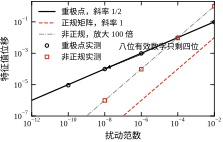
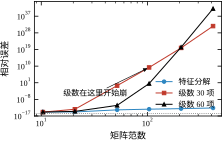
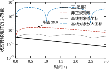
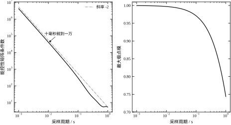
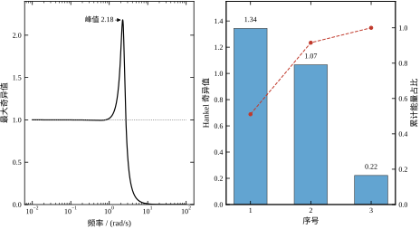

前六章反复用到同一个动作：把系统的极点算出来，看它们落在左半平面还是单位圆内，据此判断稳定性。这个动作太自然了，以至于很少有人问一句——屏幕上的那个数，小数点后有几位是真的？
取一个极简单的矩阵
A=\begin{bmatrix}-1 & 100\\ 0 & -2\end{bmatrix}. \tag{7-1}
它的特征值是 -1 和 -2，手算一行就出来：上三角矩阵，对角元就是特征值。用 numpy.linalg.eig 算，返回的也是 -1 和 -2，残差 0。到这里一切正常。
现在把左下角那个 0 改成 10^{-6}，也就是给矩阵加了一个范数为 10^{-6} 的扰动。矩阵变成
A+\Delta A=\begin{bmatrix}-1 & 100\\ 10^{-6} & -2\end{bmatrix}, \tag{7-2}
特征值变成 -0.99990001 和 -2.00009999。一个 10^{-6} 的扰动，让特征值移动了 10^{-4}，放大了 100 倍。 如果把左下角那一位舍入误差看作“程序里不可避免的噪声”，那么极点的小数点后第四位就已经不可信了。
同样的事换个位置做，结果完全不同：把右上角的 100 改成 100+10^{-6}，特征值一位都不动。因为上三角矩阵的特征值只由对角元决定，右上角那个元素无论怎么变，都只是改变特征向量，不改变特征值。同一个矩阵、同样大小的扰动，加在不同位置，后果相差无穷倍——这不是数值软件的毛病，而是“特征值对扰动敏感”这件事本身没有统一的答案，它依赖于扰动的方向和矩阵的结构。
这就是本章的主题。控制工程里绝大多数多变量问题，最后都会落到矩阵上：极点就是特征值，稳定性就是谱半径，能控性就是秩，H_2 范数来自 Lyapunov 方程，模型降阶靠 Hankel 奇异值，数值仿真靠矩阵指数。这些量在纸上是精确的，在双精度浮点里都带误差，而误差能放大多少，取决于矩阵本身的一个属性——条件数。本章要做的，是把“哪些量可以信、信到第几位、在什么条件下算法会失效”讲清楚。
需要先说明一件事：本章不讨论“建模误差”和“参数不确定性”。那些是物理层面的问题，靠鲁棒控制解决。本章讨论的是更底层的一层——即使模型完全正确、参数完全已知，计算机算出来的数字也有误差。这层误差常常被忽略，因为它在小系统上看不出来；一旦系统阶数上去、坐标量纲拉开、或者极点靠得很近，它就会盖过所有其他因素，成为结果不可信的主要原因。
先看四个现象。它们都能用本章的工具解释，也都常被误判。
现象一：特征值移动多少，与特征值本身无关。 式 (7-1) 的矩阵，特征值是 -1 和 -2，彼此相距 1，看起来一点都不“挤”。但它对应的特征向量矩阵（按单位长度归一化）是
V\approx\begin{bmatrix}1 & -1\\ 0 & 0.01\end{bmatrix},\qquad \kappa_2(V)=200.005, \tag{7-3}
条件数是 200。按 Bauer-Fike 定理，范数为 \lVert E\rVert 的扰动最多能让特征值移动 \kappa(V)\lVert E\rVert，本例是 2.000\times10^{-4}，而实测位移 9.999\times10^{-5} 正好是界的一半。判据不是“极点之间离得多远”，而是“特征向量矩阵有多病态”。 两个极点可以隔得很开，条件数照样很大；反过来，一对靠得很近的极点，只要矩阵是正规的，条件数仍然是 1。
现象二：重极点更糟，误差按平方根放大。 取 Jordan 块
J=\begin{bmatrix}-1 & 1\\ 0 & -1\end{bmatrix}, \tag{7-4}
它是标准的二重极点。给左下角加 \epsilon，特征多项式变成 (\lambda+1)^2-\epsilon=0，特征值是 -1\pm\sqrt{\epsilon}。\epsilon=10^{-8} 时位移是 10^{-4}，\epsilon=10^{-6} 时位移是 10^{-3}，两次实测与 \sqrt{\epsilon} 逐位吻合。输入八个数量级的扰动，输出只有四个数量级：双精度有十六位十进制有效数字，到了重极点这里只剩八位。
工程上这条规律有个直接推论：把两个极点“设计成完全相等”，在纸上是二阶临界阻尼，在数值上是自找麻烦。真实的实现里，宁可让它们差 10^{-3}，也不要精确相等。
现象三：用特征分解算矩阵指数，理论上对，数值上可能全错。 可对角化矩阵有恒等式 \mathrm{e}^{A}=V\mathrm{e}^{\Lambda}V^{-1}，教科书上到处都写。用它算式 (7-4) 的矩阵指数，得到的结果与 scipy.linalg.expm 的相对误差是 5.774\times10^{-1}，也就是错了 57.7\%。原因很直接：J 的特征向量矩阵条件数是 9.007\times10^{15}，已经接近双精度的极限 1/\epsilon_{\mathrm{mach}}\approx4.5\times10^{15}，求逆这一步把全部有效数字都吃掉了。而 expm 走的是 Padé 逼近加平方缩放，完全不用特征向量，误差在 10^{-16} 量级。
现象四：所有极点都稳定，状态照样能长到很大。 还是式 (7-1) 的矩阵，两个极点 -1、-2 都在左半平面，按任何判据都是稳定的。但它的状态转移矩阵的 2-范数在 t=0.695 s 处达到峰值 25.006，是同一时刻谱包络 \mathrm{e}^{-0.695}=0.499 的 50 倍。也就是说，一个“稳定”系统，在受到冲击之后，状态可以短暂地放大二十五倍再衰减下去。
这件事在工程上不是学术细节。执行器饱和、积分饱和、阀门行程限制，全都发生在暂态，而不是稳态。一个峰值放大 25 倍的系统，稳态分析一切正常，一加阶跃就撞限幅。
本章围绕三个问题展开。
第一，哪些量能信？ 特征值、奇异值、条件数、范数，这四类量在数值上的可靠性完全不同。特征值可以被非正规性放大 \kappa(V) 倍，奇异值不会——奇异值对扰动的敏感度永远是 1，这是它比特征值更“硬”的根本原因。本章要把这条差别讲透，因为它决定了做稳定性分析时该看哪个量。
第二，算法在什么条件下失效？ 同一件事往往有三条算法路径：矩阵指数可以走 Padé、Taylor 级数、特征分解；Lyapunov 方程可以走 Bartels-Stewart 或者 Kronecker 直接解；特征值可以走 QR 迭代或者特征多项式求根。它们在纸上是等价的，在浮点里差别可以是十几个数量级。本章逐条给出失效条件，并且都用可复现的数字标定。
第三，工程上怎么规避？ 有些问题是可以用换坐标解决的（平衡实现），有些只能绕开（不用特征分解算矩阵函数），有些必须改设计（不把极点配成精确重根）。本章第 5 节给一张边界表，把“什么条件下可以放心用、什么条件下必须换方法”列清楚。
§7.2 建立定义：特征值、奇异值、四类范数、条件数、矩阵指数、Lyapunov 方程，以及它们之间的不等式关系。§7.3 推导性质：特征值扰动的一阶展开、Bauer-Fike 定理、重极点的 \sqrt{\epsilon} 律、非正规系统的暂态增长界、矩阵指数三条路径的误差估计、Kronecker 矩阵的谱结构。§7.4 落到离散：\mathrm{e}^{AT_s} 怎么算才不丢精度、离散能控性矩阵为什么随 T_s 变小而病态、实 Schur 形为什么是特征值算法的标准形。§7.5 给出边界：哪些量在什么条件下可信、非正规系统的三个典型误判、采样周期与条件数的定量关系。§7.6 做验证：五张图、九段检查、五个注入错误。§7.7 收束全章。
与相邻章的分工需要说明。矩阵的基本运算、相似变换、能控性与能观性的秩判据、PBH 判据已在第 3 章与第 51 章建立，本章直接引用式 (3-30) 与那里的结论，不再重复推导；那两章关心的是“用这些工具能得到什么结构结论”，本章关心的是“这些工具本身在浮点里可靠到什么程度”。状态空间模型的建立与求解在第 2 章；连续系统的时间响应在第 4 章；离散化方法的选择在第 6 章，本章只处理“离散之后矩阵的条件数怎么变”。Lyapunov 方程在稳定性分析中的用法在第 52 章，本章只讲它的数值解法。H_2/H_\infty 范数的系统理论在第 57 章，本章只给出 Hankel 奇异值这个接口。观测器与卡尔曼滤波里的矩阵计算在第 54、56 章，那里会遇到本章的条件数问题，但解法（平方根滤波、UD 分解）属于那两章的范围。
一句话概括本章的定位：前面各章用矩阵得到结论，本章检查这些结论在有限精度下还剩下多少。
对方阵 A\in\mathbb{R}^{n\times n}，若存在非零向量 v 和标量 \lambda 满足
Av=\lambda v, \tag{7-5}
则称 \lambda 是 A 的特征值，v 是对应的特征向量。特征值也就是特征多项式 \det(\lambda I-A)=0 的根。把全部特征值收集起来叫谱，记作 \Lambda(A)；其中模最大的那个叫谱半径：
\rho(A)=\max_i\lvert\lambda_i\rvert . \tag{7-6}
连续性系统的稳定性由 \max_i\operatorname{Re}\lambda_i<0 判定，离散系统由 \rho(A)<1 判定。这两条判据在第 3 章已经用过，此处只强调它们的语义范围：谱决定的是 t\to\infty（或 k\to\infty）的渐近行为，它对“中间过程长什么样”没有任何承诺。一个谱半径很小的系统，可以在有限时间内把状态放大几十倍；一个谱半径略大于 1 的系统，也可能先衰减很久再慢慢发散。前者是 §7.3.5 的暂态增长，后者在数值上更难察觉。“稳定”是一个关于无穷远的陈述，不是一个关于幅值的陈述。
还有一条常被忽略的事实：特征值只对“相似变换”不变。对任意可逆 T，T^{-1}AT 与 A 有完全相同的特征值，但它们的范数、条件数、暂态峰值都可以相差任意多倍。同一套物理系统，换一组状态变量，特征值一位不变，数值行为却可以天差地别——§7.3.5 会用 19833 与 2.862 这对数字说明这件事。
如果 A 有 n 个线性无关的特征向量，把它们按列排成矩阵 V=[v_1,\dots,v_n]，就有
A=V\Lambda V^{-1},\qquad \Lambda=\operatorname{diag}(\lambda_1,\dots,\lambda_n). \tag{7-7}
这个分解把“矩阵”拆成了“特征方向 + 伸缩 + 换基”。它在纸上是恒等式，在浮点里的可用性完全取决于 V 有多病态：
\kappa_2(V)=\frac{\sigma_{\max}(V)}{\sigma_{\min}(V)}. \tag{7-8}
\kappa_2(V)=1 是最理想的情况，此时 V 可以取成酉矩阵（正交矩阵），A 称为正规矩阵，满足 A^TA=AA^T。实对称矩阵、反对称矩阵、正交矩阵都是正规的。正规矩阵的特征向量互相正交，V^{-1}=V^{\mathrm{T}}，求逆不会放大任何误差。
\kappa_2(V) 很大时，A 称为非正规的。极端情况是 V 奇异，此时 A 不可对角化，称为亏损矩阵，Jordan 块是最典型的例子。这时 \kappa_2(V) 在数学上是无穷大，在浮点里表现为 10^{15} 量级——刚好等于 1/\epsilon_{\mathrm{mach}}，也就是“完全不可用”。
表 7-1 四个典型矩阵的特征值、特征向量条件数与残差
| 矩阵 | 特征值 | \kappa_2(V) | \lVert Av_i-\lambda_iv_i\rVert |
|---|---|---|---|
| 正规对角 \operatorname{diag}(-1,-2) | -1,\;-2 | 1.00 | 0 |
| 非正规 \begin{bmatrix}-1&100\\0&-2\end{bmatrix} | -1,\;-2 | 200.00 | 0 |
| Jordan 块 \begin{bmatrix}-1&1\\0&-1\end{bmatrix} | -1,\;-1 | 9.007\times10^{15} | 2.220\times10^{-16} |
| 基线对象（第 3 章能控标准型） | -1.5075,\;-0.2963\pm\mathrm{j}2.2845 | 5.77 | 2.560\times10^{-15} |
这张表要横向读。前两行的特征值完全相同，条件数相差两百倍；第三行的残差是 2.220\times10^{-16}，也就是机器精度——特征对算得“很准”，可条件数是 10^{15}。残差小不等于答案准：残差衡量的是“这个 (\lambda,v) 是不是 A 的特征对”，条件数衡量的是“输入变一点点，这个特征对会跑多远”。前者是后向误差，后者是前向误差，两者相差一个 \kappa 因子。这是数值线性代数里最容易被混淆的一对概念，第 7.4 节判秩、判能控性时会反复遇到。
基线对象的条件数是 5.77，这在三阶系统里算相当好的。它之所以好，是因为三个极点分得开（-1.5075 与 -0.2963\pm\mathrm{j}2.2845 相距 1.2 以上），且矩阵虽然是能控标准型（本身非对称），但非正规程度有限。后面所有实验都拿它做“正常参照”，任何异常现象都要和它的 5.77 对比才有意义。
三阶系统的 \kappa(V) 典型值在个位数到几百之间。超过一千，通常意味着两种情况之一：要么有极点靠得很近，要么状态矩阵的某一行系数比其它行大两三个数量级（比如用标准型描述一个时间常数相差悬殊的过程）。前者可以靠拆极点解决，后者只能靠换坐标。这两种情况在 §7.5 各有对应的小节。
数值分析里“大小”有很多种量法，控制里常用的有四个：
\lVert A\rVert_1=\max_j\sum_i\lvert a_{ij}\rvert,\quad \lVert A\rVert_\infty=\max_i\sum_j\lvert a_{ij}\rvert,\quad \lVert A\rVert_2=\sigma_{\max}(A),\quad \lVert A\rVert_F=\sqrt{\sum_{i,j}a_{ij}^2}. \tag{7-9}
前两个是列和、行和的最大值，手算方便；\lVert A\rVert_2 是最大奇异值，也是诱导 2-范数，物理意义最清楚（单位球映射成椭球后的最长半轴）；Frobenius 范数把矩阵拉直当向量算欧氏长度，编程最方便，但它不是诱导范数。
它们之间有两条常用的不等式链：
\rho(A)\le\lVert A\rVert_2\le\lVert A\rVert_F\le\sqrt{n}\,\lVert A\rVert_2, \tag{7-10}
\lVert A\rVert_2^2\le\lVert A\rVert_1\lVert A\rVert_\infty . \tag{7-11}
式 (7-10) 左边那个不等号是本章反复要用的。它说谱半径永远不会超过 2-范数，但等号只在正规矩阵时成立。非正规矩阵的 \lVert A\rVert_2 可以比 \rho(A) 大很多，这个比值就是非正规程度的度量。对式 (7-1) 的矩阵，\rho=2、\lVert A\rVert_2=100.02，比值 50.01；这个数不是巧合，它与 §7.3.5 里暂态峰值和谱包络的比值 50.11 是同一个来源。对正规矩阵 \operatorname{diag}(-1,-2)，\rho=\lVert A\rVert_2=2，比值 1，暂态峰值也就是 1。
这就把“范数”和“物理”接上了：\lVert A\rVert_2/\rho(A) 近似告诉你“最坏情况下状态能被放大多少倍”，而 \rho(A) 只说“最后会衰减到零”。工程上关心的是前者，因为限幅、饱和、噪声放大都发生在有限时间。
四类范数怎么选也有讲究。做稳定性判据，只能用 \rho，四个范数都不行——范数判稳是充分条件，会误判（§7.6.6 的 M3 就是这个例子）。估暂态上界，用 \lVert\cdot\rVert_2，因为它与奇异值直接对应，几何意义清楚。手算粗估，用 \lVert\cdot\rVert_1 或 \lVert\cdot\rVert_\infty，一行加和就出来。判数值条件，用 \lVert\cdot\rVert_F 要小心：它满足 \lVert A\rVert_F\ge\lVert A\rVert_2，用它估 \sigma_{\max} 会高估，最多高估 \sqrt{n} 倍。
对任意矩阵（不必是方阵），奇异值是 A^{\mathrm{T}}A 的特征值的算术平方根：
\sigma_i(A)=\sqrt{\lambda_i(A^{\mathrm{T}}A)},\qquad i=1,\dots,\min(m,n). \tag{7-12}
几何意义是：A 把单位球映成一个椭球，\sigma_1 是最长半轴、\sigma_{\min} 是最短半轴。方阵的条件数就是最长与最短之比：
\kappa_2(A)=\frac{\sigma_{\max}(A)}{\sigma_{\min}(A)} . \tag{7-13}
奇异值与特征值最关键的区别在扰动敏感度上。特征值的位移可以被 \kappa(V) 放大，奇异值不会：
\lvert\sigma_i(A+E)-\sigma_i(A)\rvert\le\lVert E\rVert_2 . \tag{7-14}
这就是 Weyl 不等式。它的右边只有扰动本身的大小，没有矩阵的任何条件数——奇异值对扰动是“绝对”稳定的，误差永远不超过扰动范数。根子在于 A^{\mathrm{T}}A 是对称半正定矩阵，而对称矩阵是正规的，特征向量正交、\kappa(V)=1，所以它的特征值（也就是奇异值的平方）不会放大误差。
这条性质解释了为什么控制理论里凡是“判稳、判秩、判增益”的结论都尽量用奇异值表述：小增益定理用的是 \bar\sigma，鲁棒稳定性用的是 \underline{\sigma}，模型降阶用的是 Hankel 奇异值，能控性判据的可靠版本用的是最小奇异值而不是行列式。特征值只在“需要知道具体模态”时才用，而且必须同时报出 \kappa(V)。
线性方程组求解的误差界也由条件数控制：
\frac{\lVert\Delta x\rVert}{\lVert x\rVert}\le\kappa_2(A)\frac{\lVert\Delta b\rVert}{\lVert b\rVert}. \tag{7-15}
双精度下 \lVert\Delta b\rVert/\lVert b\rVert 的量级是 10^{-16}，所以 \kappa=10^{16} 的矩阵解出来的解没有任何有效数字；\kappa=10^{12} 只剩四位；\kappa=10^{8} 还有八位。这条换算关系会在 §7.4 判能控性时直接用上。
表 7-2 四类矩阵量的性质对照
| 量 | 对扰动的敏感度 | 相似变换下 | 控制里的用途 |
|---|---|---|---|
| 特征值 \lambda_i | 放大 \kappa(V) 倍，重根按 \sqrt{\epsilon} | 不变 | 极点配置、模态分析、稳定性 |
| 奇异值 \sigma_i | 不超过 \lVert E\rVert_2 | 会变（非酉变换） | 增益、鲁棒性、降阶、秩 |
| 范数 \lVert A\rVert_2 | 不超过 \lVert E\rVert_2 | 会变 | 暂态峰值、小增益定理 |
| 条件数 \kappa_2(A) | 可放大 \kappa 倍 | 会变 | 判断结果有几位可信 |
表里“相似变换下”一列值得多看一眼：特征值是相似不变量，另外三个都不是。这意味着换一组状态变量，稳定性结论不变，但数值可信度会变。§7.5.6 会用平衡实现说明怎么利用这一点。表 7-2 的其余两列（敏感度、用途）在后面各节都会用到：§7.3 用第二列解释三种算法的失效，§7.5 用第四列决定该看哪个量。
矩阵指数由级数定义：
\mathrm{e}^{At}=I+At+\frac{(At)^2}{2!}+\frac{(At)^3}{3!}+\cdots \tag{7-16}
它是线性定常系统 \dot x=Ax 的状态转移矩阵，x(t)=\mathrm{e}^{At}x(0)。三条性质后面要用：半群性 \mathrm{e}^{A(t_1+t_2)}=\mathrm{e}^{At_1}\mathrm{e}^{At_2}；行列式 \det\mathrm{e}^{A}=\mathrm{e}^{\operatorname{tr}A}；特征值映射——\mathrm{e}^{A} 的特征值恰好是 \mathrm{e}^{\lambda_i}。最后一条说明矩阵指数的谱只由原矩阵的谱决定，但矩阵指数本身不是。
可对角化时
\mathrm{e}^{A}=V\mathrm{e}^{\Lambda}V^{-1}, \tag{7-17}
这条公式在纸上无懈可击，在浮点里却要求 V 求逆，因而继承 \kappa(V) 的全部问题。不可对角化时它连纸面上都不成立，必须用 Jordan 块的定义直接算：
\mathrm{e}^{Jt}=\mathrm{e}^{-t}\begin{bmatrix}1 & t\\ 0 & 1\end{bmatrix},\qquad J=\begin{bmatrix}-1 & 1\\ 0 & -1\end{bmatrix}. \tag{7-18}
注意右上角那个 t：重极点的时间响应里出现 t\mathrm{e}^{-t} 项，这正是“重极点响应比单极点慢一拍”的代数来源。也正因为它，\mathrm{e}^{Jt} 在 t=1 时的 2-范数是 1.618\mathrm{e}^{-1} 而不是 \mathrm{e}^{-1}——同一组特征值，非正规的那一个范数更大。
连续 Lyapunov 方程写作
AP+PA^{\mathrm{T}}+BB^{\mathrm{T}}=0 . \tag{7-19}
A 稳定时它有唯一对称正定解，且可以写成积分：
P=\int_0^\infty \mathrm{e}^{At}BB^{\mathrm{T}}\mathrm{e}^{A^{\mathrm{T}}t}\,\mathrm{d}t . \tag{7-20}
P 叫能控 Gramian，物理意义是“从零状态出发、用单位能量的输入能把状态推到多远”：对任意方向 x，x^{\mathrm{T}}P^{-1}x 是到达该方向所需的最小输入能量。能观 Gramian Q 把 A 换成 A^{\mathrm{T}}、B 换成 C^{\mathrm{T}}，意义对称。
解存在唯一的条件是
\lambda_i(A)+\lambda_j(A)\neq0,\qquad \forall i,j, \tag{7-21}
即任意两个特征值不能关于虚轴镜像对称。稳定系统自动满足（全部实部为负，和也不可能为零），所以工程上很少遇到不存在的情况；但“存在”不等于“好算”，这条会在 §7.3.6 展开。
把式 (7-19) 按列拉直，可以化成一个 n^2\times n^2 的线性方程组：
\big(I\otimes A+A\otimes I\big)\operatorname{vec}(P)=-\operatorname{vec}(BB^{\mathrm{T}}), \tag{7-22}
其中 \otimes 是 Kronecker 积，\operatorname{vec} 把矩阵按列堆成向量。这就是“直接解”的来路：把矩阵方程变成一个标量方程组，用高斯消元解。它的系数矩阵 K=I\otimes A+A\otimes I 的特征值是 \lambda_i+\lambda_j，共 n^2 个——式 (7-21) 的可解条件在这里表现为“K 非奇异”。
n=3 时 K 是 9\times9，直接解毫无压力；n=100 时 K 是 10000\times10000，存储就要 800 MB，求逆的运算量是 10^{12} 次浮点运算。这就是为什么实际软件（包括 scipy.linalg.solve_continuous_lyapunov）用的是 Bartels-Stewart 算法：先把 A 化成实 Schur 形，再对三角系统逐列回代，运算量 O(n^3)。两种解法的数值差别，§7.3.6 用数字对比。
§7.2.1 到 §7.2.6 给了六个量：特征值、特征向量、奇异值、范数、矩阵指数、Gramian。这一小节补三个“介于特征值和范数之间”的量，它们在第 5 节的边界判断里要用到。
谱横坐标定义为特征值实部的最大值，\alpha(A)=\max_i\operatorname{Re}\lambda_i。它回答“最慢的模态衰减多快”，是稳定性的判据，也是 \mathrm{e}^{At} 长期行为的指数率。但它只管长期，不管过程——式 (7-1) 的矩阵 \alpha=-1，状态照样能长到 25 倍。
数值域定义为
W(A)=\left\{\frac{x^{\mathrm{H}}Ax}{x^{\mathrm{H}}x}:\ x\neq0\right\},
它是复平面上的一块凸区域，必定包含全部特征值。它的最右端叫数值域横坐标 \omega(A)=\max\operatorname{Re}W(A)，满足 \alpha(A)\le\omega(A)。这个不等式两端的差距，就是“特征值都在左半平面、但状态仍能增长”的空间。对正规矩阵，W(A) 是特征值凸包的精确填充，两端相等，所以正规系统没有暂态增长——这与 §7.3.5 的结论一致。
数值域还有一个工程上很好用的性质：若 W(A) 整个落在左半平面，则 \lVert\mathrm{e}^{At}\rVert_2\le1 对一切 t\ge0 成立。这是一个充分条件，比“特征值在左半平面”强得多，代价是保守：它要求所有方向同时衰减，而不只是渐近衰减。
伪谱定义为
\Lambda_\varepsilon(A)=\left\{z\in\mathbb{C}:\ \sigma_{\min}(zI-A)\le\varepsilon\right\},
也就是“离成为特征值只差 \varepsilon 的那些点”的集合。它正是全部特征值的 \varepsilon-膨胀：\varepsilon\to0 时收缩成谱。对正规矩阵，\Lambda_\varepsilon 就是每个特征值周围半径 \varepsilon 的圆盘并集；对非正规矩阵，它可以扩张到极远的地方，形状也不再是圆。
伪谱把 §7.3.2 的 Bauer-Fike 定理几何化了。Bauer-Fike 说扰动后的特征值落在以原特征值为圆心、半径 \kappa(V)\lVert E\rVert 的圆盘里；伪谱说的是同一件事的另一面——\Lambda_{\lVert E\rVert}(A) 包含了所有 \lVert\Delta A\rVert\le\lVert E\rVert 的扰动可能产生的特征值，而且这个包含是紧的。两者的差别在于：Bauer-Fike 的圆盘是保守的（对所有扰动方向取最坏），伪谱是精确的（按方向区分）。
回到式 (7-1) 的矩阵。它的谱横坐标是 -1，但峰值 25.006 出现在 t=0.695 s。如果把峰值折算成等效指数增长率，\ln(25.006)/0.695\approx4.63，也就是说在峰值到来之前的这段时间里，状态的实际增长速率是 4.63，与谱横坐标 -1 相差五个多单位。这五个多单位全部来自非正规性，也正是数值域横坐标 \omega 与 \alpha 的差距所允许的空间。
三个量的用途可以这样分：判断长期稳定性看 \alpha；判断会不会撞限幅看 \omega 和峰值；判断“极点这个数能信几位”看伪谱的宽度。三者的关系是包含关系 \{\lambda_i\}\subseteq W(A)、\{\lambda_i\}\subseteq\Lambda_\varepsilon(A)，越往右越保守，也越安全。
先把现象一算清楚。设 A 有一个单重特征值 \lambda_i，左右特征向量分别是 v_i（列向量）和 u_i（满足 u_i^{\mathrm{H}}A=\lambda_iu_i^{\mathrm{H}}，即 A^{\mathrm{T}} 的特征向量）。给 A 加扰动 \epsilon E，特征值和特征向量都跟着变：
\lambda_i(\epsilon)=\lambda_i+\epsilon\mu_i+O(\epsilon^2),\qquad v_i(\epsilon)=v_i+\epsilon w_i+O(\epsilon^2).
把两边代进 (A+\epsilon E)v_i(\epsilon)=\lambda_i(\epsilon)v_i(\epsilon)，按 \epsilon 的一次项归并，得到
(A-\lambda_iI)w_i=\mu_iv_i-Ev_i . \tag{7-23}
左边乘 u_i^{\mathrm{H}}，利用 u_i^{\mathrm{H}}(A-\lambda_iI)=0，第一项消失，剩下
\mu_i=\frac{u_i^{\mathrm{H}}Ev_i}{u_i^{\mathrm{H}}v_i},\qquad \lvert\Delta\lambda_i\rvert\le\kappa_i\lVert E\rVert,\quad \kappa_i=\frac{\lVert u_i\rVert_2\lVert v_i\rVert_2}{\lvert u_i^{\mathrm{H}}v_i\rvert}. \tag{7-24}
这个 \kappa_i 是单个特征值的条件数，它只取决于该特征值的左右特征向量夹角：夹角越小（越接近正交），分母越大，\kappa_i 越接近 1；夹角越接近平行，分母越接近零，\kappa_i 越大。正规矩阵的左右特征向量相同、互相正交，所以每个 \kappa_i=1。
回到式 (7-1) 的矩阵。对 \lambda=-2，左特征向量是 (0,1)^{\mathrm{T}}，右特征向量归一化后是 (-0.99995,\,0.0099995)^{\mathrm{T}}，两者内积 0.0099995，于是 \kappa_2\approx100。扰动只加在 (1,0) 元素上时，u^{\mathrm{H}}Ev=-\epsilon，位移 =\epsilon/0.0099995=100\epsilon=10^{-4}，与实测的 9.999\times10^{-5} 一致，也与全局的 \kappa(V)=200 一致（200 是两个特征值中较大的那个条件数）。
这条推导给出了一个比 Bauer-Fike 更细的工具：不必对整组特征值用同一个 \kappa(V)，可以逐个算 \kappa_i，看哪个模态最脆弱。工程上“某个模态对参数特别敏感”，说的就是这一个 \kappa_i 特别大。
把式 (7-24) 从单个特征值推广到整组，就是 Bauer-Fike 定理。若 A 可对角化为 A=V\Lambda V^{-1}，则对任意扰动 E，A+E 的每个特征值都落在以某个 \lambda_i 为圆心、\kappa(V)\lVert E\rVert 为半径的圆盘并集里：
\Lambda(A+E)\subset\bigcup_i\Big\{\,z:\lvert z-\lambda_i\rvert\le\kappa_2(V)\lVert E\rVert_2\,\Big\}. \tag{7-25}
读这条定理要注意三件事。第一，它是并集，不是逐个配对：它只说“每个新特征值离某个旧特征值不远”，不说“第 i 个新特征值离第 i 个旧特征值不远”。第二，它是上界，不保证紧。第三，它要求 A 可对角化；对 Jordan 块，\kappa(V) 是无穷大，定理退化成一个无用的大数，得换 §7.3.3 的方法。
实测有多紧？取 \kappa(V)=200.005 的矩阵，用 20 个随机方向的扰动，每个范数档取最大位移，结果如表 7-3。
表 7-3 Bauer-Fike 界与实测位移（20 次随机方向取最大）
| \lVert E\rVert_2 | 实测最大位移 | 界 \kappa\lVert E\rVert | 实测/界 |
|---|---|---|---|
| 10^{-8} | 8.554\times10^{-7} | 2.000\times10^{-6} | 0.428 |
| 10^{-6} | 9.911\times10^{-5} | 2.000\times10^{-4} | 0.496 |
| 10^{-4} | 9.981\times10^{-3} | 2.000\times10^{-2} | 0.499 |
| 10^{-2} | 9.910\times10^{-1} | 2.000\times10^{-0} | 0.495 |
四档的比值稳定在 0.43 到 0.50 之间，实测位移大约是界的一半。这不是巧合，也不是定理写错了：Bauer-Fike 的界对“最不利方向”成立，而随机方向有一半的概率落在“半敏感”的方向上；取 20 次最大值后，比值就稳定在 1/2 附近。真正的最坏方向是把扰动放在 (1,0) 元素上，此时的比值是 1（§7.3.1 算过）。
实践上这条结论很有用：用 Bauer-Fike 界估误差，量级是对的，但不要把它当成“精确预测”，它最多会高估一倍。反过来，如果实测位移超过了界，那一定是程序错了，而不是定理错了。

图 7-1 把三种情形画在同一张双对数图上。三条直线的斜率分别是 1/2（重极点）、1（正规矩阵）、1 但截距高出 100 倍（非正规矩阵）。实测的空心圆点落在对应直线上，说明式 (7-24) 与式 (7-26) 的预测是逐点成立的。斜率比截距更重要：截距只影响“能信几位”，斜率决定了“扰动减小一百倍，误差能减小多少倍”——重极点的斜率是 1/2，意味着扰动减小一百倍，误差只减小十倍。
Jordan 块式 (7-4) 加上左下角的 \epsilon：
J_\epsilon=\begin{bmatrix}-1 & 1\\ \epsilon & -1\end{bmatrix},\qquad \det(\lambda I-J_\epsilon)=(\lambda+1)^2-\epsilon=0, \tag{7-26}
于是 \lambda=-1\pm\sqrt{\epsilon}。这就是现象二的来历：\epsilon=10^{-4} 给 10^{-2}，\epsilon=10^{-6} 给 10^{-3}，\epsilon=10^{-8} 给 10^{-4}，三档实测与 \sqrt{\epsilon} 逐位吻合，连末位都不差。
能不能也用条件数解释？可以。J_\epsilon 的两个特征向量归一化后是 (1,\sqrt{\epsilon})^{\mathrm{T}}/\sqrt{1+\epsilon} 与 (-1,\sqrt{\epsilon})^{\mathrm{T}}/\sqrt{1+\epsilon}，两者几乎反向平行，行列式约为 2\sqrt{\epsilon}，于是
\kappa_2(V)\approx\frac{1}{2\sqrt{\epsilon}}=\frac{1}{2\delta}, \tag{7-27}
其中 \delta=\sqrt{\epsilon} 是两个特征值的间距。\epsilon=10^{-8} 时 \kappa\approx5000。而 §7.1 里那个 9.007\times10^{15} 是 \epsilon=0、即精确重根时算出来的：此时两列完全重合，V 在数学上奇异，浮点里条件数只能停在 1/\epsilon_{\mathrm{mach}}=2^{53}=9.007\times10^{15}。两个数不矛盾，一个是“间距已知”的情形，一个是“间距为零”的极限。
真正可用的结论是式 (7-27)，不是那个 10^{15}：两个极点相距 \delta 时，特征向量的条件数约为 1/(2\delta)。\delta=10^{-3} 给 500，\delta=10^{-6} 给 5\times10^{5}。工程上如果两个极点天然靠得很近（比如一对几乎重合的传感器模态），那就别指望能把它们分开辨识出来——不是算法不好，是信息本身在浮点里存不住。
算 \mathrm{e}^{At} 有三条路，它们的结果在纸上是同一个矩阵，在浮点里差别可以是二十个数量级。
第一条是截断 Taylor 级数，按式 (7-16) 逐项累加。它的误差来自被扔掉的尾巴。尾巴的大小不能只看 \lVert At\rVert，因为非正规矩阵的幂增长远慢于范数的幂，用 \lVert At\rVert 估出来的界会悲观二十个数量级。真正可靠的做法是看实测：对基线对象，\lVert At\rVert=20.71 时 30 项的相对误差是 4.563\times10^{-14}，还很够用；\lVert At\rVert=103.56 时误差已经是 1.886\times10^{9}，完全崩了；到 \lVert At\rVert=414.25，30 项给 4.540\times10^{31}，加到 60 项反而更糟，给 1.279\times10^{41}。
最后这个反直觉的结果值得解释。项数增加，误差反而变大，是因为中间项的绝对值已经远远超过了最终结果：\lVert At\rVert=414 时，级数在第 400 项附近达到 10^{160} 量级，而 \mathrm{e}^{At} 本身的元素只有 10^{3} 量级。所有有效数字在“先涨到 10^{160} 再落回来”的过程中被舍入吃光了。这是灾难性抵消，不是截断误差，增加项数只会让抵消更彻底。
第二条是缩放加平方。先用恒等式
\mathrm{e}^{At}=\Big(\mathrm{e}^{At/2^s}\Big)^{2^s} \tag{7-28}
把矩阵范数压到 1 以下，此时 30 项 Taylor 的截断误差已经在 10^{-20} 以下，剩下的只有舍入；然后平方 s 次。平方每做一次误差放大约 \kappa 倍，但 s 很小（\lVert At\rVert=414 时 s=9），累计放大完全可控。这条路径是 MATLAB 与 SciPy 的默认实现，实际用的是 [13/13] 阶 Padé 有理逼近代替 Taylor，效果相同而项数更省。
第三条是特征分解，用式 (7-17)。它的误差大致是
\frac{\lVert \mathrm{e}^{A}-V\mathrm{e}^{\Lambda}V^{-1}\rVert}{\lVert \mathrm{e}^{A}\rVert}\lesssim\kappa_2(V)\,\epsilon_{\mathrm{mach}} . \tag{7-29}
对基线对象，\kappa=5.77，误差应当在 10^{-15} 量级，实测 9.512\times10^{-16}，吻合。对 Jordan 块，\kappa=9.007\times10^{15}，误差应当是 2 量级，实测 0.577，也在同一个量级。这条公式把“能不能用特征分解”变成了一个可以直接算的判断：先算 \kappa(V)，乘上 2.2\times10^{-16}，如果超过你能接受的误差，就别用。
表 7-4 矩阵指数三条路径的实测相对误差（参考值取 scipy.linalg.expm）
| 矩阵 | t | \lVert At\rVert_2 | 级数 30 项 | 特征分解 |
|---|---|---|---|---|
| 基线对象 | 0.5 | 5.18 | 1.434\times10^{-16} | 9.512\times10^{-16} |
| 基线对象 | 2.0 | 20.71 | 4.563\times10^{-14} | 1.574\times10^{-15} |
| 放大 20 倍 | 0.5 | 103.56 | 1.886\times10^{9} | 4.978\times10^{-14} |
| 放大 20 倍 | 2.0 | 414.25 | 4.540\times10^{31} | 2.187\times10^{-13} |
| Jordan 块 | 1.0 | 1.62 | — | 5.774\times10^{-1} |
这张表最值得看的是最后两列的反向走势：矩阵越“大”，级数越差、特征分解反而越好；矩阵越“退化成重根”，特征分解越差、级数毫无影响。两条路径的失效原因完全不同，所以它们的组合覆盖不了彼此的空缺——特征分解在范数大时仍然精确，是因为 \kappa(V) 不变；级数在重根时仍然精确，是因为它根本不用特征向量。
这也回答了一个常见的疑问：既然特征分解在 \lVert At\rVert 大时仍然准，为什么还推荐 expm？因为“范数大”和“重根”经常同时出现。一个既有大系数又有近重极点的矩阵，两条路径会同时失效，而 Padé 路径两头都不怕。用一条对所有情况都稳的路径，比记住两条路径各自的适用范围划算。
实际写代码时，判断可以简化成一句话：只要 \kappa(V) 小于 10^{3}，特征分解算矩阵函数的结果与库函数只差 10^{-13} 量级，拿来做交叉验证是安全的；超过这条线，两者会迅速分道扬镳。所以 \kappa(V) 不只是“精度指标”，它还是一个很好的“该不该相信第二种算法”的开关。

图 7-2 把这张表画成曲线。横轴是 \lVert At\rVert，纵轴是相对误差。特征分解那条线（蓝）在整个范围内都贴着 10^{-14} 走，只在最右端略微抬头；级数那条线（红）在 \lVert At\rVert\approx20 之后急剧上升，30 项与 60 项的差距只有不到一个数量级——因为限制它的不是截断，是抵消。
工程结论只有一句：算矩阵指数用 expm，不要自己写特征分解。 如果非要用级数，必须先缩放，把 \lVert At\rVert 压到 1 附近，否则得到的是随机的数。
现在解释现象四。由式 (7-17)，
\lVert\mathrm{e}^{At}\rVert_2\le\kappa_2(V)\,\mathrm{e}^{\alpha t},\qquad \alpha=\max_i\operatorname{Re}\lambda_i . \tag{7-30}
这个界把“暂态能有多大”拆成两个因子：\kappa(V) 决定放大的倍数，\mathrm{e}^{\alpha t} 决定衰减的速度。对正规矩阵 \kappa=1，界退化成 \mathrm{e}^{\alpha t}，而且取得到等号——这就是为什么教科书上“稳定系统响应不会超过初值”的说法对正规矩阵成立，对一般矩阵不成立。
对式 (7-1) 的矩阵，\kappa=200、\alpha=-1，界在 t=0.695 处给 200\times0.499=99.8，实测峰值 25.006，界比实测松了四倍。虽然松，但量级抓对了：如果只看谱，你会以为峰值不超过 1；实际是 25。
峰值与谱包络的比值是 25.006/0.499=50.11，与 §7.2.3 算出的 \lVert A\rVert_2/\rho(A)=50.01 几乎相同。这不是巧合：非正规系统的暂态峰值大致由 \lVert A\rVert_2/\rho(A) 决定，因为 \mathrm{e}^{At} 在 t 很小时近似 I+At，\lVert At\rVert 的增长速度就是 \lVert A\rVert，而衰减速度由 \rho 控制。两个尺度打架，峰值就出来了。
机理可以从矩阵结构直接看出来：A 的右上角是 100，意味着第二个状态以 100 倍的强度驱动第一个状态。第二个状态的时间常数是 1/2 s，第一个是 1 s。冲击之后，第二个状态在半秒内衰减掉，但它在这半秒里已经把第一个状态推到了很高的位置；第一个状态自己衰减得慢，于是形成了一个“先冲高、再慢慢回落”的形状。快模态把能量灌进慢模态，这就是非正规系统暂态增长的物理图像。

图 7-3 里有四条线，前三条说明非正规性，第四条说明坐标选择。正规矩阵（黑实线）的范数从 1 单调衰减，峰值就在 t=0。非正规矩阵（红虚线）冲到 25 再回落。基线对象（灰点划线）峰值 2.862，因为它的 \kappa=5.77 不大。最上面那条蓝线是基线对象换了一组坐标之后的同一条曲线：取 D=\operatorname{diag}(1,100,10^4)，令 A_2=DAD^{-1}，极点和稳定性一位不变，但峰值变成 19833.667，是原来的 6930 倍，条件数从 5.77 涨到 4.936\times10^4。
同一套物理系统，只因为状态变量选的单位不同，数值行为就差了三四个数量级。 这不是软件的毛病，而是“状态变量本身没有物理唯一性”的直接后果。工程上的推论是：分析暂态时不能只看极点，必须同时看 \kappa(V) 或者直接算 \lVert\mathrm{e}^{At}\rVert 的峰值；设计控制器时如果发现“稳态指标都满足，一加阶跃就撞限幅”，先查这个峰值，而不是先调 PID 参数。
式 (7-30) 在实际用的时候有两点要注意。第一，它给的是上界，对基线对象松了四倍，对非正规矩阵松得更多，所以不能反过来用它反推 \kappa(V)——上界松不代表系统好，只代表这个界不够紧。第二，\alpha 取的是最右极点，若系统有多个差别很大的实部，这个界会由最慢的模态主导，对快速模态的放大完全不起作用。想要更紧的估计，就得直接用数值方法扫 \lVert\mathrm{e}^{At}\rVert，或者用 §7.2.7 的数值域横坐标代替 \alpha——后者给出的界 \lVert\mathrm{e}^{At}\rVert_2\le\mathrm{e}^{\omega t} 更贴近实际，代价是要多算一个凸优化问题。
式 (7-22) 的系数矩阵 K=I\otimes A+A\otimes I 有一个很整齐的谱结构：若 A 的特征值是 \lambda_1,\dots,\lambda_n，则 K 的特征值是全部两两和
\lambda_i+\lambda_j,\qquad i,j=1,\dots,n . \tag{7-31}
这条性质说明 K 的条件数直接由“极点离虚轴有多近”决定。取阻尼振荡族 A=\begin{bmatrix}-\alpha&-1\\1&-\alpha\end{bmatrix}，它的特征值是 -\alpha\pm\mathrm{j}，于是 K 的特征值是 -2\alpha（二重）与 -2\alpha\pm2\mathrm{j}。最大与最小模之比约为
\kappa_2(K)\approx\frac{2}{2\alpha}=\frac{1}{\alpha}. \tag{7-32}
实测四档 \alpha=0.4,\,0.1,\,0.025,\,0.00625 对应的 \mathrm{cond}(K) 是 2.693、10.05、40.01、160.0，乘以 \alpha 分别得 1.077、1.005、1.000、1.000——\alpha 越小，式 (7-32) 越准。
表 7-5 阻尼振荡族的 Lyapunov 解法对比
| \alpha | \mathrm{cond}(K) | 残差（Bartels-Stewart） | 残差（Kronecker 直接解） | 两解相对差 |
|---|---|---|---|---|
| 0.4 | 2.693 | 0 | 8.327\times10^{-17} | 1.214\times10^{-16} |
| 0.1 | 10.05 | 6.497\times10^{-16} | 2.776\times10^{-17} | 3.672\times10^{-16} |
| 0.025 | 40.01 | 2.512\times10^{-15} | 2.515\times10^{-15} | 4.833\times10^{-16} |
| 0.00625 | 160.0 | 5.551\times10^{-17} | 8.327\times10^{-17} | 4.017\times10^{-15} |
这张表给出的结论与很多教材的说法相反：在 n=2 这个规模上，两种解法的精度没有差别，残差都在 10^{-16}，两解之差不超过 4\times10^{-15}。原因很简单，K 只有 4\times4，条件数 160 乘上 \epsilon_{\mathrm{mach}} 还是 10^{-14}，远没有到危险的量级。
所以“不要用 Kronecker 直接解”的理由不是精度，是代价。n=3 时 K 是 9\times9，两种解法都只花几微秒；n=50 时 K 是 2500\times2500，高斯消元的运算量约 1.6\times10^{10} 次，而 Bartels-Stewart 是 1.25\times10^{5} 次，差五个数量级；n=200 时 K 的存储就要 200^4\times8 字节，也就是 12.8 GB，根本放不下。
Bartels-Stewart 的做法是先把 A 化成实 Schur 形：
A=UTU^{\mathrm{T}},\qquad U^{\mathrm{T}}U=I, \tag{7-33}
T 是准上三角（对角块是 1\times1 或 2\times2，对应实特征值和共轭复根）。把 P=UYU^{\mathrm{T}} 代进式 (7-19)，两边左乘 U^{\mathrm{T}}、右乘 U，得到
TY+YT^{\mathrm{T}}+U^{\mathrm{T}}BB^{\mathrm{T}}U=0 . \tag{7-34}
T 是三角的，式 (7-34) 可以逐列回代：先解第一列，再解第二列，每一列都是一个三角方程组。整个过程的运算量 O(n^3)，与解一个普通线性方程组同阶。
关键是这一步用的是正交变换。U 的条件数是 1，无论 A 多病态，变换本身不放大误差。这正是 Schur 形在数值线性代数里地位这么高的原因：它把矩阵化简成三角，同时保持正交性，两件事同时做到，代价还只有 O(n^3)。QR 迭代求特征值、Bartels-Stewart 解 Lyapunov、Sylvester 方程、Riccati 方程的初值化，全都建立在它上面。
有了 Gramian，就能定义两个在降阶与控制里天天用的量。第一个是 Hankel 奇异值：
\sigma_i^{H}=\sqrt{\lambda_i(PQ)},\qquad i=1,\dots,n, \tag{7-35}
它们等于能控 Gramian 与能观 Gramian 乘积的特征值开方，也等于平衡实现下状态坐标的“能量”对角元。第二个是 H_2 范数：
\lVert G\rVert_2=\sqrt{\operatorname{tr}\!\left(CPC^{\mathrm{T}}\right)} . \tag{7-36}
对基线对象，两个 Gramian 的条件数分别是 64.54 与 116.2，Hankel 奇异值是 1.343682、1.065431、0.221748，H_2 范数 1.293564。最后一个奇异值比前两个小一个数量级，说明第三个模态的能量贡献很低——这正是降阶的依据。
按 \sigma_i^H 求和，前两个占 91.6\%；按平方求和（也就是能量），前两个占 98.4\%。这两个百分比要分清：Glover 的降阶误差界用的是奇异值本身，\lVert G-G_r\rVert_\infty\le2\sum_{i>r}\sigma_i^H，截掉第三个模态的界是 2\times0.221748=0.4435；而“能量占 98.4\%”说的是平方和，两者不是一回事。工程上写报告时混用这两个数，会得出互相矛盾的结论。
H_2 范数与频域的关系也值得对一下：1.293564 是全部频率上增益的均方根，而最大奇异值的频域峰值是 2.180480，出现在 2.228 rad/s。两个数一个是“平均”，一个是“峰值”，前者由 Gramian 算出（解一次 Lyapunov 方程），后者要扫频或者解 Riccati 方程。峰值出现在 2.228 rad/s，略低于无阻尼自然频率 2.2845 rad/s，这是阻尼把共振点往下拉的标准现象。
矩阵函数不止指数一个。平方根和 Riccati 方程在控制里同样常用，它们的数值行为与矩阵指数遵循同一套规律。
矩阵平方根要解 X^2=A。最直接的做法是特征分解 A=V\Lambda V^{-1}，然后 X=V\Lambda^{1/2}V^{-1}。这条路和 \mathrm{e}^{A}=V\mathrm{e}^{\Lambda}V^{-1} 一样，误差被 \kappa(V) 放大。A 是 Jordan 块时，X 的相对误差同样是 O(1) 量级的灾难。可靠的算法是 Schur 法：先做实 Schur 分解 A=UTU^{\mathrm{T}}，再算上三角矩阵 T 的平方根 S（用递推公式逐元素求），最后 X=USU^{\mathrm{T}}。全程只用正交变换，\kappa=1，误差只与 \lVert A\rVert 有关。这与 §7.4.4 讲的“Schur 形是控制计算的标准形”是同一个道理。
平方根在控制里的用处比看上去多。平衡实现的变换矩阵可以由 Gramian 的 Cholesky 因子或平方根构造；协方差平方根滤波用它保证数值上永远是正定的；H_\infty 控制里的 R 矩阵分解也是平方根问题。这些场合的共同要求是“结果必须正定”，而特征分解路径在 \kappa(V) 大时会给出带负特征值的近似，直接破坏正定性。
代数 Riccati 方程是 LQR 与 H_\infty 的核心。连续时间的标准形式是
A^{\mathrm{T}}X+XA-XBR^{-1}B^{\mathrm{T}}X+Q=0,
它的稳定化解（使 A-BR^{-1}B^{\mathrm{T}}X 稳定的那个）可以由 Hamiltonian 矩阵
H=\begin{bmatrix}A & -BR^{-1}B^{\mathrm{T}}\\ -Q & -A^{\mathrm{T}}\end{bmatrix}
的稳定不变子空间给出。把 H 的特征向量按稳定/不稳定分成两块，\begin{bmatrix}U_1\\ U_2\end{bmatrix} 对应稳定特征值，则 X=U_2U_1^{-1}。
这个公式把 Riccati 问题转化成了特征值问题，也把特征值问题的全部病态性带了进来。X 的误差由 \kappa(U_1) 决定，而 \kappa(U_1) 在闭环极点靠近虚轴时会变得极大——因为那时 H 的特征值成对贴近虚轴，稳定与不稳定的分界线模糊。所以“闭环极点不能太靠近虚轴”这句话，除了鲁棒性理由之外，还有一条数值理由：贴得越近，Riccati 解越不可信，控制器增益越不准。
实际软件（scipy.linalg.solve_continuous_are）用的是 Schur 向量法：先算 H 的实 Schur 形并重新排序，把稳定特征值排到左上角，再从 Schur 向量解出 X。它与“求特征向量再求逆”数学等价，但数值上稳得多，因为排序后的 Schur 形给出了一个正交基，避免了显式求 U_1^{-1} 时 \kappa(U_1) 的直接放大。
这三件事——矩阵指数、矩阵平方根、Riccati 方程——在教科书里是三章内容，在数值上是一条线：凡是要从矩阵算出一个矩阵，先看能不能只用正交变换；不能的话，误差就由某个特征向量矩阵的条件数决定。 这条线贯穿本章，也是后面所有涉及矩阵函数的章节的共同前提。
连续模型离散化，状态和输入要一起处理。严格的做法是零阶保持假设：在采样间隔内输入不变，于是
A_d=\mathrm{e}^{AT_s},\qquad B_d=\int_0^{T_s}\mathrm{e}^{A\tau}B\,\mathrm{d}\tau . \tag{7-37}
A_d 是矩阵指数，B_d 是矩阵指数在区间上的积分。第 3 章式 (3-30) 已经给了一个巧妙的做法：把两者拼成一个增广矩阵，做一次矩阵指数，两块同时出来。写开就是
\exp\left(\begin{bmatrix}A & B\\ 0 & 0\end{bmatrix}T_s\right) =\begin{bmatrix}A_d & B_d\\ 0 & I\end{bmatrix}. \tag{7-38}
这个恒等式可以逐块验证。把增广矩阵的指数按 Taylor 展开，左下角恒为零块，右上角那一块正好是 \sum_{k\ge0}A^kBT_s^{k+1}/(k+1)!，逐项对应 B_d 的级数展开。它不只是一个省事的技巧，而是保证 (A_d,B_d) 属于同一个采样系统的唯一简单办法。
为什么不能分两步算？第一，B_d 没有闭式，必须先算积分；第二，即便用级数硬算，两次独立计算的舍入误差也不一致，会导致“离散模型在采样点上的阶跃响应与连续解对不上”。第 6 章反复强调采样点上的精确性，在状态空间里就靠这一步落实。
数值上要注意的是增广矩阵的范数。A 的量级是 1 到 10，B 的量级也是 1，T_s 很小时 \lVert\cdot\rVert T_s 更小，expm 走 Padé 路径没有任何问题。真正的风险在于 T_s 很大：T_s=10 s 时 \lVert AT_s\rVert 可能到 100，此时若自己写级数就会踩 §7.3.4 的坑。这也是为什么本章的验证脚本一律调用 scipy.linalg.expm，不自己写。
离散系统的能控性矩阵是
\mathcal{C}_d=\big[B_d,\;A_dB_d,\;A_d^2B_d,\;\dots,\;A_d^{n-1}B_d\big]. \tag{7-39}
判能控性就是判它的秩。但“秩”在浮点里是个连续量，实际做法是看最小奇异值或者条件数。基线对象在九档采样周期下的结果如表 7-6。
表 7-6 离散能控性矩阵的条件数随采样周期（基线对象，n=3）
| T_s / s | \mathrm{cond}(\mathcal{C}_d) | \mathrm{cond}(V_d) | \lvert z\rvert_{\max} |
|---|---|---|---|
| 0.0010 | 4.229\times10^{6} | 5.766 | 0.999704 |
| 0.0024 | 7.488\times10^{5} | 5.766 | 0.999298 |
| 0.0056 | 1.318\times10^{5} | 5.766 | 0.998335 |
| 0.0133 | 2.286\times10^{4} | 5.766 | 0.996057 |
| 0.0316 | 3.822\times10^{3} | 5.766 | 0.990675 |
| 0.0750 | 5.814\times10^{2} | 5.766 | 0.978029 |
| 0.1778 | 7.146\times10^{1} | 5.766 | 0.948682 |
| 0.4217 | 1.201\times10^{1} | 5.766 | 0.882561 |
| 1.0000 | 5.397\times10^{0} | 5.766 | 0.743601 |
采样周期缩小一千倍，条件数从 5.4 涨到 4.2\times10^{6}，涨了将近六个数量级。前六个点在双对数坐标下的斜率是 -2.053，与理论值 -(n-1)=-2 吻合。
这个 -2 从哪来？把 A_d 和 B_d 在 T_s=0 处展开：A_d=I+AT_s+O(T_s^2)，B_d=BT_s+O(T_s^2)。代进式 (7-39)：
\mathcal{C}_d=T_s\big[B,\;B+T_sAB+O(T_s^2),\;\dots\big]. \tag{7-40}
括号里三列的主项都是 B，彼此只差 O(T_s) 的相对量；第二列与第一列之差是 T_sAB，第三列与第一列之差是 2T_sAB+O(T_s^2)。三列几乎平行，矩阵趋近于秩 1。这是典型的合流范德蒙结构：节点间距是 T_s，节点靠得越近，范德蒙矩阵越病态，条件数按 1/T_s^{n-1} 增长。对 n=3 就是 1/T_s^2，对 n=10 就是 1/T_s^9——阶数越高，小采样周期的代价越可怕。

图 7-4 左边是条件数，右边是最大极点模。两张图要对照看：采样周期从 1 s 减到 1 ms，极点模从 0.744 升到 0.9997，越来越贴近单位圆；同时条件数从 5.4 升到 4.2\times10^6。“离散系统更接近连续系统”和“离散矩阵更病态”是同一件事的两面：T_s\to0 时 A_d\to I，所有极点挤向 1，极点之间的信息被抹平了。
工程上这条规律的后果很具体。做极点配置时，如果先算 \mathcal{C}_d 再求 K，条件数 10^6 意味着配置出来的极点实际位置偏离设计值可能到 10^{-10} 量级；做观测器时同样。正确的做法是绕开能控性矩阵：用 Ackermann 公式的 Sylvester 形式、用 Schur 方法、或者干脆在连续域设计再离散化。“能控性矩阵满秩”只是理论判据，“\mathcal{C}_d 的条件数”才是能不能算出可用增益的判据。
为什么很多教材仍然把 \mathcal{C} 的秩作为主要判据？因为它便宜、直观、且在纸上是精确的。作为理论判据它没有问题，作为计算判据它不合格。这个区别在单输入低阶系统上看不出来，一旦对象阶数上百、或者采样周期进到毫秒，两者就分开了。工程代码里如果还留着“rank(ctrb(A,B))==n 就算能控”这样的检查，等于在用一个必然通过的断言。
表 7-6 里有一列几乎是“多余”的：\mathrm{cond}(V_d) 在九档采样周期下都是 5.766，一位不差。这不是巧合，也不是程序写错了。
设 Av=\lambda v，则
A_dv=\mathrm{e}^{AT_s}v=\mathrm{e}^{\lambda T_s}v, \tag{7-41}
也就是说离散系统的特征向量与连续系统完全相同，变的只有特征值 \lambda\to\mathrm{e}^{\lambda T_s}。既然特征向量矩阵一个字都没改，它的条件数当然也不变。A_d 不等于 \mathrm{e}^{AT_s} 的近似，二者在数学上相等（数值上差 10^{-15} 量级），所以这条恒等式是精确的。
这个事实把两件事分开了。第一，离散化不恶化特征值的条件数：\kappa(V) 是多少，离散之后还是多少，不会因为采样变快而变坏。第二，离散化确实恶化了“分辨两个极点”的能力：两个极点在 z 平面上的距离是
\lvert z_i-z_j\rvert\approx\lvert s_i-s_j\rvert T_s\quad(T_s\to0), \tag{7-42}
采样周期缩小一千倍，间距也缩小一千倍。绝对误差不变（还是 \kappa\epsilon），相对误差就放大一千倍。T_s=1 ms 时基线对象的两个主导极点（-0.2963\pm\mathrm{j}2.2845）在 z 平面上的间距约 4.569\times10^{-3}；按 \kappa(V)=5.77 算，10^{-6} 的扰动最多让极点在 z 平面上移动 5.8\times10^{-6}，相对间距是 0.13\%。采样周期再小十倍，这个相对位移就涨到 1.3\%，已经能看出“两个极点分不清”的迹象了。
所以“离散化让极点变敏感”这句话要说得更准：敏感度 \kappa(V) 没变，变的是标尺。§7.3.3 说“间距缩小 \delta 倍，条件数涨 1/(2\delta) 倍”，那里讨论的是两个极点真正靠拢；这里讨论的是坐标系缩放，是另一回事。工程上判断“极点能不能信”，要同时看 \kappa(V) 和间距的相对值，缺一个都判断不了。
eig 可信而 eig + inv 不可信前面反复说“特征值可以信、特征向量不能信”，理由在算法层面。
现代特征值算法不用特征多项式求根，而是用 QR 迭代。基本想法是：对 A 做 QR 分解 A=QR，令 A'=RQ，则 A'=Q^{\mathrm{T}}AQ 与 A 相似、特征值不变。反复迭代，A_k 会收敛到上三角（或准上三角）形，对角块就是特征值。实际实现加了位移（Wilkinson 位移、Francis 双步位移），收敛速度从线性提高到立方，二十来次迭代就能把 3\times3 矩阵做到机器精度。
这条路径的关键性质是后向稳定：算出来的每个 \hat\lambda_i 都是某个 A+E 的精确特征值，且 \lVert E\rVert\le c\,n\,\epsilon_{\mathrm{mach}}\lVert A\rVert，c 是个不大的常数。注意这个界里没有 \kappa(V)——它只依赖 \lVert A\rVert 和矩阵阶数。所以哪怕矩阵极端非正规，eig 给出的特征值仍然是某个邻近矩阵的精确特征值。
但这不等于“特征值准”。后向稳定只保证“算的是邻近矩阵的特征值”，而邻近矩阵的特征值与原矩阵差多少，由 §7.3.2 的 Bauer-Fike 决定，也就是由 \kappa(V) 决定。后向稳定 + 病态 = 前向不准，两个概念必须分开。这就是为什么 §7.2.2 的表 7-1 里，Jordan 块的残差是 2.220\times10^{-16}（后向误差小），条件数却是 10^{15}（前向误差大）。
特征向量则是另一回事。QR 迭代收敛到 Schur 形，特征向量要靠回代 (A-\lambda I)v=0 单独求。这个方程在 \lambda 附近几乎是奇异的，回代出来的 v 的相对误差与 \kappa_i 成正比。所以 numpy.linalg.eig 返回的特征向量在非正规矩阵上可以完全不可用，而它返回的特征值仍然可用。
这也是“用 Schur 形做控制计算”这条工程惯例的来历：Schur 形是正交变换的结果，\kappa=1，不放大误差；它的对角块直接给出极点，判稳只需要看块的实部；需要特征向量时再单独处理，并且知道它可能不准。
第一，判秩用相对容差，不用行列式。numpy.linalg.matrix_rank 的默认容差是 \max(m,n)\epsilon_{\mathrm{mach}}\sigma_{\max}，对双精度大约是 \sigma_{\max}\times10^{-15}。如果矩阵的奇异值从 1 平滑衰减到 10^{-10}，默认容差会判它满秩，但此时条件数已经是 10^{10}，用它算出来的逆没有任何意义。可靠的做法是显式给一个相对容差，比如 10^{-10}，并且同时打印最小奇异值。
第二，不要写 inv(A)。求逆再相乘的误差界是 \kappa(A)\epsilon，而直接解方程（solve）的误差界也是 \kappa(A)\epsilon，看起来一样，但求逆多做了一次矩阵乘法，实际误差通常大几倍；更要紧的是 inv 让人忘记检查条件数。凡是要解 Ax=b，就用 solve；确实需要逆矩阵本身时（比如算 P^{-1} 做椭球），先看条件数。
第三，Lyapunov 的解要手工对称化。数值解出来的 P 会有 10^{-16} 量级的不对称，后续算 P^{-1} 或者 Hankel 奇异值时，这个不对称会被放大。养成习惯：拿到 P 之后立刻做 P\leftarrow(P+P^{\mathrm{T}})/2。
第四，能不用能控性矩阵就不用。§7.4.2 已经说明它的条件数按 1/T_s^{n-1} 恶化。极点配置有 Sylvester 方程形式，观测器增益有对偶形式，模型降阶用 Gramian 而不是 \mathcal{C}，这些路径都绕开了这个病态矩阵。
把上面四条落成代码，就是下面三段。它们与 code/ch007_sim.py 里的实现逐行对应，可以直接放进工程。
import numpy as np
from scipy import linalg
def rank_rtol(a, rtol=1e-10):
"""按相对容差判秩：最小奇异值小于 rtol 倍最大奇异值就算缺秩。"""
s = np.linalg.svd(a, compute_uv=False)
return int(np.sum(s > rtol * s[0])), float(s[-1] / s[0])
def discretize_zoh(a, b, ts):
"""增广矩阵一次 expm，同时得到 (A_d, B_d)，保证两者同源。"""
n, m = a.shape[0], b.shape[1]
aug = np.zeros((n + m, n + m))
aug[:n, :n] = a
aug[:n, n:] = b
e = linalg.expm(aug * ts)
return e[:n, :n], e[:n, n:]
def gramian(a, b):
"""解 A P + P A^T + B B^T = 0，返回强制对称化的 P。"""
p = linalg.solve_continuous_lyapunov(a, -(b @ b.T))
return 0.5 * (p + p.T)第一段返回秩和相对最小奇异值两个值，用的时候两个都要看：秩够但相对奇异值太小，说明“理论满秩、实际算不动”。第二段就是式 (7-38)，没有任何技巧，全部难度在 expm 里。第三段的对称化只有一行，但少了这一行，后面算 Hankel 奇异值时可能得到复数。
前面所有讨论都默认矩阵是稠密的、阶数不大。这个假设在 n\le500 时成立，再往上就要换一套算法，而换算法意味着误差结构也换了。
稠密算法的代价是 O(n^3)。n=1000 时一次 eig 大约 10^{9} 次浮点运算和 8 MB 存储，还能接受；n=10^{4} 时是 10^{12} 次运算和 800 MB，单机已经很吃力。控制工程里的 n 通常不大——一个复杂的化工装置全套状态变量也就几百个——但模型降阶、有限元、热传导这类问题的 n 可以到 10^{5}，这时稠密路径直接不可用。
大规模下改用迭代法，思路是“不碰整个矩阵，只碰它作用在少数向量上的结果”。求主导特征值用 Arnoldi 或 Lanczos 迭代：构造一个 Krylov 子空间 \{b,Ab,A^2b,\dots\}，在这个低维子空间上做 QR，得到原矩阵部分特征值的近似。求 Lyapunov 方程用 ADI 迭代或 Krylov 投影，只算 P 的低秩因子 ZZ^{\mathrm{T}}。算矩阵指数不显式构造 \mathrm{e}^{A}，而是算它作用在向量上的结果，即 \mathrm{e}^{A}b。
这套方法的误差结构与稠密算法完全不同，有三点必须记住。
第一，后向稳定性不再自动成立。稠密 QR 迭代有严格的后向误差界，迭代法没有——它只保证在 Krylov 子空间上残差小，子空间之外的部分没有任何保证。所以迭代法给出的特征值必须配一个残差 \lVert Av-\lambda v\rVert 一起看，残差大就说明这个特征对没收敛。
第二，收敛容差成了新的“可信度”参数。稠密算法里可信度由 \kappa(V) 和 \epsilon_{\mathrm{mach}} 决定，没有别的旋钮；迭代法多了一个用户设定的容差，设成 10^{-6} 就真的只算到 10^{-6}。把容差和条件数混在一起看，很容易得出“算法不准”的错误结论。
第三，“最右特征值”要专门求。Arnoldi 默认收敛到模最大的特征值，而判稳要的是实部最大的特征值。两者在稳定系统里往往不是同一个——模最大的可能是离虚轴很远的一对高频极点。求最右特征值要用移位反迭代或者 shift-invert 模式，这是工程实现里最常配错的一处。
边界可以这样划：n\le500 且矩阵稠密，用本章讲的全部方法，结论直接可用；500<n\le5000，仍可用稠密算法，但要关注内存和 \kappa(V)；n>5000 或矩阵稀疏，换迭代法，同时接受“残差代替误差界”这个前提。跨过这条线之后，本章的判据仍然有效——\kappa(V) 照样决定前向误差——只是 \kappa(V) 本身也算不出来了，只能用残差和扰动实验间接估计。
§7.4.2 说能控性矩阵随 T_s 变小而病态，并建议“用 Sylvester 形式绕开”。这一小节把这个建议说清楚。
设目标极点是 \mu_1,\dots,\mu_n，把它们放在对角矩阵 \Lambda 里。极点配置问题可以写成矩阵方程
AX-X\Lambda=BG,
其中 G 是任选的 m\times n 输入矩阵，X 是待解的 n\times n 矩阵。解出 X 之后，取 K=GX^{-1}，就有 (A-BK)X=X\Lambda——也就是说 X 的每一列都是闭环矩阵的特征向量，\Lambda 的对角元就是闭环极点。
这个形式的好处是：它不构造能控性矩阵。求解用的是 Bartels-Stewart 的 Sylvester 版本，先把 A 和 \Lambda 都化成实 Schur 形，再逐块回代，全程正交变换，代价 O(n^3)、存储 O(n^2)。条件数由分离度 \operatorname{sep}(A,\Lambda)=\sigma_{\min}(I\otimes A-\Lambda^{\mathrm{T}}\otimes I) 决定，它衡量“原极点与目标极点有多接近”。
分离度小的时候会出什么事？X 病态，K=GX^{-1} 的范数爆炸。极端情况下目标极点与某个原极点重合，\operatorname{sep}=0，X 奇异，方程根本没有唯一解。这与 §7.3.6 的 Lyapunov 情形是同一个机制：K=I\otimes A+A\otimes I 的最小奇异值小，解就不可信。
所以极点配置有一条不写在教科书里的约束：目标极点不能落在原极点附近。移动一点点（比如把 -1.5075 挪到 -1.50）在纸上是小事，在数值上要求 X 有极大的条件数。工程上的做法通常是整体搬移——把带宽提高一倍、把阻尼比改一档——而不是微调某一个极点。
对比两条路径：Ackermann 公式要算 \mathcal{C}^{-1}，条件数按 1/T_s^{n-1} 恶化；Sylvester 路径的条件数由 \operatorname{sep} 决定，与采样周期无关。同样是三阶系统，前者在 T_s=1 ms 时条件数 4.2\times10^{6}，后者仍是几十的量级。这就是 §7.5.4 建议“连续域设计后整体离散化”的技术依据。
把 §7.3 的结论换成一个可以直接用的经验式。双精度有十六位十进制有效数字，特征值的相对误差大致是 \kappa(V)\epsilon_{\mathrm{mach}}，换成“还能信几位”就是
\text{可信位数}\approx16-\lg\kappa_2(V). \tag{7-43}
\kappa=1 给十六位，\kappa=200 给十三点七位，\kappa=10^{6} 给十位，\kappa=10^{12} 给四位。这个换算是粗的（实际还与扰动的具体方向和 \lVert A\rVert 有关），但用来做工程判断足够。
表 7-7 极点可信度的分级
| \kappa_2(V) | 可信位数 | 典型场景 | 建议 |
|---|---|---|---|
| <10 | 15 位以上 | 对称结构、单输入单输出低阶对象 | 直接用极点做分析与设计 |
| 10\sim10^{3} | 13\sim15 位 | 一般能控标准型、分散控制系统 | 可用，报告里附上 \kappa |
| 10^{3}\sim10^{6} | 10\sim13 位 | 高阶对象、坐标量纲差异大 | 先做平衡实现再分析 |
| >10^{6} | 少于 10 位 | 近重极点、强非正规系统 | 只作定性判断，定量结论另找依据 |
基线对象的 5.77 落在第一档，所以前面所有实验都拿它做“正常参照”是合理的。表 7-7 的第三列和第四列要一起读：档位越高，可用的分析手段越少，到了第四档就只能做定性判断。式 (7-43) 还有一层用法：当你算出一个 \kappa=10^{9} 的系统时，不必去查表，直接就知道“极点后六位是噪声”，报告里也就不会写出 1.507498 这种精度。
§7.3.3 的 \sqrt{\epsilon} 律给设计提了一条硬建议：不要把极点配成精确重根。原因不是理论不优美，而是精确重根在浮点里根本存不住——两个极点相距 10^{-8} 时，条件数 5000；相距 10^{-16} 时，条件数到了 10^{15}，极点位置完全不可信。
如果物理结构本身就对称（比如两个完全相同的执行器驱动同一个负载），重根是客观存在的，这时应该用 Jordan 形或者模态分析来处理，但要预期误差按平方根放大，不能指望五位有效数字。
对极点配置这类设计问题，实用的做法是主动把重极点拆开一点点。把两个 -2 的极点改成 -1.99 和 -2.01，间距 0.02，条件数降到 25 左右，而阶跃响应的差别在千分之一量级，肉眼看不出来。用千分之一的性能代价换十位有效数字，这笔交易在工程上几乎总是划算的。
还有一类更隐蔽的近重极点：控制器极点与观测器极点靠得太近。按分离原理，两者可以独立设计，但如果把观测器带宽配成控制器带宽的两倍，两组极点可能只差 10\%，此时闭环系统在那一带会出现一对“几乎重合”的极点，条件数急剧上升。经验做法是让观测器比控制器快三到五倍，既能保证分离，又不至于把噪声放大太多。
判断“有没有打架”，有一个便宜的办法：算闭环矩阵的 \kappa(V)，与开环的 \kappa(V) 对比。若闭环的突然涨了一个数量级以上，而极点位置看上去都很正常，那多半是两组极点挨得太近。此时不要急着改增益，先画一张极点图，把控制器极点和观测器极点用不同符号标出来——图上分得清，数值上才算分得清。
误判一：用 \lVert A_d\rVert>1 判离散系统不稳定。 取 §7.1 的非正规矩阵，T_s=0.5 s 离散后 \lVert A_d\rVert_2=23.876，看起来像发散；但它的谱半径是 0.606531，系统稳定。原因是 A_d 的特征值是 \mathrm{e}^{-0.5}=0.6065 与 \mathrm{e}^{-1}=0.3679，都在单位圆内，而范数大只是因为非正规性。判稳只能用谱半径，不能用范数；范数管的是暂态，两者功能不同。
误判二：谱半径小于 1 就认为响应不会超过初值。 还是这个矩阵，峰值 25.006，是初值的二十五倍。这在离散域同样成立，只是表现形式变成“前几拍数值冲高”。数字滤波器里的溢出、定点实现里的饱和，很多都是这个原因，而不是系数算错了。
误判三：极点都在左半平面深处，就认为“衰减很快、不会有问题”。 衰减速度由实部决定，峰值由非正规性决定，两者互不相干。基线对象换坐标之后，极点还是 -1.5075 与 -0.2963\pm\mathrm{j}2.2845，衰减时间常数一点没变，峰值却从 2.862 涨到 19833。极点是相似不变量，峰值不是，所以“极点一样、行为一样”这句话只在正规矩阵上成立。
除了这三条，还有一个判据层面的误判：用 \mathrm{cond}(\mathcal{C}) 判能控性。§7.6 的变异测试里有一个例子，能控性矩阵的条件数是 2\times10^{9}，最小奇异值 7.07\times10^{-10}，按“条件数大于 10^{6} 就认为不能控”的土办法，会把它判成不能控；但实际上它的秩仍是 2，系统完全能控，只是“算出增益来会很难看”。条件数回答的是“算得准不准”，不是“能不能控”。
第 6 章给过一条约束：采样周期越大，零阶保持带来的相位滞后越大，经验式是 -\omega T_s/2=-\pi f_c/f_s，f_s=10f_c 时是 18.0^\circ。那条约束要求 T_s 尽量小。
本章给的是反方向的约束：离散能控性矩阵的条件数按 1/T_s^{n-1} 恶化，n=3 时是 1/T_s^2。T_s=0.1 s 时 \mathrm{cond}(\mathcal{C}_d)=297.5，T_s=1 ms 时是 4.2\times10^{6}。这条约束要求 T_s 不能太小。
两条约束夹出一个合理区间。做法是先按带宽定：T_s\approx1/(10f_c)，然后检查三个数——相位滞后是否在预算内（第 6 章）、\mathrm{cond}(\mathcal{C}_d) 是否小于 10^{6}（本章）、最大极点模是否够远离单位圆（0.95 以下比较安全）。三个都过，这个 T_s 就可以用。
如果带宽要求迫使 T_s 很小、而条件数又超标，正确的出路不是继续减小 T_s，而是换实现方式：在连续域完成极点配置与观测器设计，再整体离散化；或者先做平衡实现，把坐标的量纲拉平。“采样越快越好”是一个流传很广的误解，它在相位上成立，在数值上不成立。
还有一层现实约束来自硬件：T_s 越小，每拍的计算预算越少，定点运算的量化噪声占比越大。这三件事叠加，使得实际工程里的采样周期往往落在带宽的 10 到 20 倍之间，而不是越短越好。
§7.2.1 说过，特征值是相似不变量，范数和条件数不是。这句话反过来用，就是换坐标可以改善数值行为而不改变系统。
平衡实现的构造是：找一个对角矩阵 T，使
T^{-1}PT^{-\mathrm{T}}=T^{\mathrm{T}}QT=\Sigma=\operatorname{diag}(\sigma_1^H,\dots,\sigma_n^H), \tag{7-44}
也就是让能控 Gramian 与能观 Gramian 在新坐标下相等且对角。\Sigma 的对角元正是 §7.3.7 的 Hankel 奇异值。变换后的系统 (T^{-1}AT,\;T^{-1}B,\;CT) 与原系统传递函数完全相同，但所有状态变量的“能控程度”与“能观程度”都归一化了。
效果有多明显？回到 §7.3.5 的例子：基线对象原坐标 \kappa=5.77，用 D=\operatorname{diag}(1,100,10^4) 放大后 \kappa=4.936\times10^4。平衡实现的作用就是把这种人为的量纲差异抹掉，把条件数拉回到由 Hankel 奇异值决定的水平。对基线对象，Hankel 奇异值是 1.3437、1.0654、0.2217，最大最小之比只有 6.06，所以平衡坐标下的 \kappa 应当在个位数到十位数之间。
代价是两次 Lyapunov 求解（O(n^3)）和一次矩阵分解。对 n\le100 的系统，这点代价可以忽略；对更大规模，平衡实现本身也会遇到条件数问题，那时要用平方根算法或者 Krylov 方法，属于模型降阶的专门文献，本书不展开（第 57 章的控制器降阶只用到小规模的情形）。
工程上的用法很简单：只要发现同一个系统在不同人手里算出的极点或增益对不上，先查坐标。量纲差三四个数量级的系统（比如一个状态是温度、另一个是流量），几乎一定会遇到这个问题。
把全章的结论收成一张表。每一行是一个常见任务，列出“能放心用”的条件、“失效时看到什么”、“换什么做法”。
表 7-8 本章各工具的适用边界
| 任务 | 能放心用的条件 | 失效时的表现 | 替代做法 |
|---|---|---|---|
| 用极点判稳 | \kappa(V)<10^{3} | 极点位置随参数漂移 | 看伪谱、用 Schur 形 |
| 用特征向量做模态分析 | \kappa_i<100 | 模态方向乱、符号跳变 | 平衡实现、Schur 向量 |
| 算 \mathrm{e}^{At} | 调用 expm |
自写级数在 \lVert At\rVert>30 崩 | 缩放加平方 |
| 解 Lyapunov | 任意 n，用 Bartels-Stewart | Kronecker 存储随 n^2 爆炸 | solve_continuous_lyapunov |
| 用 \mathcal{C} 判能控 | \mathrm{cond}(\mathcal{C}_d)<10^{6} | 满秩但算出的增益不能用 | 连续域设计、Sylvester 形式 |
| 判秩 | \sigma_{\min}/\sigma_{\max}>10^{-10} | 默认容差判满秩 | 显式相对容差 |
| 分析暂态峰值 | \kappa(V)<10 时看极点即可 | 峰值被低估几十倍 | 直接算 \lVert\mathrm{e}^{At}\rVert 峰值 |
| 模型降阶 | Hankel 奇异值有明显断层 | 断层不明显，截断误差大 | 加权降阶、奇异摄动 |
本章所有数字都基于双精度，\epsilon_{\mathrm{mach}}=2.2\times10^{-16}，约十六位十进制有效数字。实际控制器不一定跑在双精度上：低成本 DSP 常用 16 位或 32 位定点，PLC 里也常见单精度。位数一少，§7.5.1 的分级表就要整体左移。
换算方法很直接。定点数的相对精度是 2^{-(b-1)}，b 是字长。16 位定点给 2^{-15}=3.05\times10^{-5}，换成十进制是 4.5 位有效数字；32 位定点给 2^{-31}=4.66\times10^{-10}，约 9.3 位。把这两个数代入“可信位数 = 有效位数 -\lg\kappa”，得到一张新表：
最后一行解释了一类现场故障：控制器在 PC 上用双精度仿真，阶跃响应漂亮；烧进 16 位定点 DSP 之后，同样的参数开始小幅振荡。原因不是“实现有 bug”，而是极点位置在定点下的误差已经到了 10^{-2} 量级，闭环阻尼比被改掉了。仿真和实现用的不是同一个数域，可信位数不一样，这是必须在设计阶段就算清楚的。
量化误差在数学上等价于给状态矩阵加了一个扰动，其范数约为 \epsilon_{\mathrm{fix}}\lVert A\rVert。按 Bauer-Fike，极点位移的上界是 \kappa(V)\epsilon_{\mathrm{fix}}\lVert A\rVert。这个式子里三个因子都可以人为控制：\epsilon_{\mathrm{fix}} 由选型决定，\kappa(V) 由坐标选择决定，\lVert A\rVert 由时间尺度决定。三条路里，最划算的是压 \kappa(V)——选一个条件数好的坐标系（平衡实现），等于凭空多出几位精度，而换芯片要花钱。
定点实现还有两个与本章直接相关的细节。第一，累加器位宽要留够。矩阵乘法的中间结果位宽是操作数位宽的两倍，16 位乘 16 位要 32 位累加器，省掉这一步会引入比 \epsilon_{\mathrm{fix}} 大得多的误差。第二，不要用差分代替微分。§7.4.2 说过，采样越小、能控性矩阵越病态，定点下这个恶化会提前到来——双精度下 T_s=1 ms 还能用，16 位定点下可能 T_s=10 ms 就已经不行了。
表 7-8 那一整张边界表有一个共同点：所有“失效”都不是软件报错，而是结果看起来正常但数值不对。这是数值线性代数最难办的地方——它不给你异常，只给你一个错得很自然的答案。所以检查手段必须内建在流程里，而不是等到出了问题再查；位宽、\kappa(V)、\lVert At\rVert 这三个量应当在设计阶段就写在文档里，而不是等到现场调试时才反推。
code/ch007_sim.py 分九段：特征值与条件数、Bauer-Fike 实测、矩阵指数三路径、Lyapunov 两解法、奇异值与 Hankel、采样周期扫描、暂态峰值、五个变异测试、汇总。全脚本以第 3 章的基线对象 G(s)=8/(s^3+2.1s^2+6.2s+8) 为主角，只在需要构造病态时引入辅助矩阵。
脚本有三条约定，目的是让正文里的每个数字都能逐位核对。第一，参考值只用一个来源：矩阵指数的“真值”一律取 scipy.linalg.expm，不再用第二个算法交叉验证，避免“两个都错但错得一样”的假通过。第二，随机数固定种子：扰动实验用 default_rng(20261027)，换机器、换版本都能复现同一组数。第三，打印比值而不只打印误差：表 7-3 的“实测/界”一列比误差本身更有信息量，它能告诉你界是紧还是松。
运行只需要 NumPy 与 SciPy，没有其他依赖，全部九段在普通笔记本上不到一秒跑完。脚本不开绘图，五张图由另一个文件 code/ch007_figs.py 生成——这样做是为了让“算数”和“画图”分开：数值结论不依赖绘图库的版本，绘图失败也不影响数字的可复现性。图脚本读的是同一组常量，两个文件里的基线矩阵定义必须保持一致，改一处要同时改另一处，这是这类双文件结构唯一的维护负担。
输出格式刻意保持朴素：纯文本、定宽列、指数记法统一三位有效数字。这样做的原因是正文里的数字要能“看着输出抄”，一旦格式花哨（比如自动保留四位、按量级切换单位），抄写时就会引入人为取舍，读者核对时对不上。可复现的标准不是“跑出来差不多”，而是“逐位对得上”。
第一段输出表 7-1 的四个矩阵，外加两组扰动实验。第二段是 Bauer-Fike 的 20 次随机方向扫描，输出表 7-3。
读这两段时最该注意的不是数值大小，而是同一矩阵上扰动位置的影响。对非正规矩阵，扰动 (0,1) 元素（右上角）时特征值一位不动，位移 0.000\times10^{0}；扰动 (1,0) 元素（左下角）时位移 9.999\times10^{-5}。两次扰动的范数相同、位置不同，结果相差无穷倍。这条现象在脚本里只有三行代码，但它是整章“特征值敏感度没有统一答案”的实证。
Jordan 块那三档 \epsilon 的输出更直接：\epsilon=10^{-4} 给 1.000\times10^{-2}，\epsilon=10^{-6} 给 1.000\times10^{-3}，\epsilon=10^{-8} 给 1.000\times10^{-4}，与 \sqrt{\epsilon} 逐位相等。这三行数字是式 (7-26) 的直接验证，也是“重极点只能信一半位数”的量化依据。
表 7-3 的最后一列“实测/界”在四档扰动下分别是 0.428、0.496、0.499、0.495，稳定在 0.5 附近。这个数字本身就是一条信息：随机方向上，Bauer-Fike 界平均松一倍。原因不难理解，界取的是 \kappa(V)\lVert E\rVert，对应“扰动恰好落在最敏感方向”；随机方向与最敏感方向的夹角平均下来，投影系数约为一半。所以工程上估计极点漂移时，可以用 0.5\kappa(V)\lVert E\rVert 作为“典型值”，用 \kappa(V)\lVert E\rVert 作为“最坏值”。
20 次扫描够不够？这里要判断的是量级而不是极值。实测比值稳定在 0.5 附近、不随扫描次数明显上升，说明“最敏感方向”在随机扰动下几乎不可能被命中——它的邻域在全部方向里占的测度很小。要严格求最坏方向，不该靠随机扫描，而该直接算 V 的最小奇异值对应的左奇异向量，一步就能得到。脚本用随机扫描，是为了展示“平均情况”与“最坏情况”的差距，不是为了求极值。
第三段输出表 7-4，外加两组补充数字。第一组是 Jordan 块的特征分解路径：条件数 9.007\times10^{15}，误差 5.774\times10^{-1}。第二组是放大 40 倍后的级数：\lVert A\rVert=414.25 时 30 项误差 4.540\times10^{31}，60 项误差 1.279\times10^{41}。
第二组数字是整章最反直觉的一处。项数翻倍，误差反而大了十个数量级。如果只看“截断误差随项数单调下降”这条教科书结论，会以为程序写错了；实际原因是灾难性抵消——中间项涨到 10^{160}，有效数字在涨落过程中全部丢失。脚本没有做任何特殊处理，这个结果就是双精度的真实行为。
三条路径的差别不在代码写得好不好，而在是否经过特征向量。Padé 路径先用缩放把范数压到 1 以下，再用有理逼近，最后平方回去；整个过程只用到矩阵乘法和解线性方程组，与 V 无关，所以 \kappa(V) 再大也影响不到它。代价是平方步骤会把已经存在的相对误差按约 \lVert\mathrm{e}^{A/2^s}\rVert^2 放大，因此缩放次数 s 要选得刚好——太小则逼近不准，太大则放大误差。实际实现取 s\approx\log_2\lVert A\rVert，正好够用。
这也解释了表 7-4 里“放大 20 倍”那两行：Padé 路径的误差仍然是 10^{-14}\sim10^{-13}，只是略高于基线，因为平方次数多了几次；而级数路径在同一位置已经崩到 10^{9} 以上。同一个问题、同一个双精度，两条路径的误差相差二十几个数量级，差别的全部来源是“有没有做缩放”。
第四段输出表 7-5 的四档 \alpha。第五段输出 Gramian 条件数、Hankel 奇异值、H_2 范数、频域峰值，以及两个 2\times2 矩阵的椭圆长宽比。
第五段的开头两行值得单独看：能控 Gramian 的条件数 64.54，能观 Gramian 的条件数 116.2。这两个数都在百量级，说明 Gramian 本身解得可靠——按 §7.5.1 的分级，可信位数在 13 位以上。这是一切 Hankel 计算的前提：如果 P 或 Q 的条件数到了 10^{12}，Hankel 奇异值第一个就会不准，后面的截断指标全部作废。所以做降阶之前，先打印这两个条件数，是比打印奇异值更早的一步检查。
第五段最后那一组数字值得单独说：对正规矩阵 \operatorname{diag}(-1,-2)，\mathrm{e}^{A} 把单位圆映成长宽比 2.718 的椭圆，这个数正好是 \mathrm{e}——因为两个奇异值是 \mathrm{e}^{-1} 与 \mathrm{e}^{-2}，比值 \mathrm{e}。对非正规矩阵，长宽比是 10864.699，四个数量级的差距全部来自那个 100。同一个“特征值都是 -1,-2”的系统，单位圆的像一个是规整的椭圆，一个是被拉成了一条线，这就是非正规性最直观的几何图像。

图 7-5 左图是 \bar\sigma(G(\mathrm{j}\omega)) 随频率的变化，峰值 2.180 出现在 2.228 rad/s，低频段收敛到直流增益 1。右图是三个 Hankel 奇异值的柱状图与累计曲线，累计值依次是 51.1\%、91.6\%、100\%。两张图放在一起看，是因为它们回答的是同一个问题的两端：左图告诉你“最坏频率上增益多大”，右图告诉你“砍掉哪个模态代价最小”。
第六段把采样周期从 1 ms 扫到 1 s，共九档，输出表 7-6。前六点的双对数斜率是 -2.053，与理论值 -(n-1)=-2 吻合。这一段最值得看的是第三列：\operatorname{cond}(V_d) 九档全是 5.766，一位小数都没变。
这一列本来是顺手加上去的，结果成了 §7.4.3 的核心证据。它说明离散化把极点沿 z=\mathrm{e}^{sT_s} 搬动、把间距压缩，但没有改变特征向量的方向——映射是逐点的，每个特征向量原样保留。所以“采样越小越病态”这句话必须限定对象：病态的是能控性矩阵，不是极点本身。前者的条件数按 T_s^{-(n-1)} 恶化，后者与 T_s 无关。把两件事混为一谈，就会得出“采样快了极点就不准”的错误结论；反过来，也会漏掉真正的问题——采样快了，算出来的增益不能用。
第七段输出暂态峰值。正规矩阵 \operatorname{diag}(-1,-2) 的峰值是 1.000，出现在 t=0，之后单调衰减，峰值与谱包络之比 1.00，符合直觉。非正规矩阵 \begin{bmatrix}-1&100\\0&-2\end{bmatrix} 的谱半径同样是 0.367879，峰值却是 25.006，出现在 t=0.695 s，比值 50.11。
比值 50.11 与 \lVert A\rVert_2/\rho(A)=50.01 只差 0.2\%。这不是巧合：非正规暂态峰值的量级由 \lVert A\rVert_2 和 \rho(A) 的比决定，前者衡量“一步能把状态推多大”，后者衡量“长期衰减多快”。这个估计式在 §7.3.5 已给出，这里得到数值确认。
同一段还有一组相似变换的对照。取 D=\operatorname{diag}(1,100,10^4)，令 A_2=DAD^{-1}，极点一位不变，峰值从 2.862 涨到 19833.667，\kappa(V) 从 5.766 涨到 4.936\times10^4。一个系统的“暂态放大多少倍”不是系统的固有属性，而是坐标的属性。 这句话听上去别扭，其实很自然：状态向量本身没有物理量纲，把温度、流量、电压三个数放进同一个向量，它们的相对大小完全由单位决定。峰值是在这个向量上取的 2-范数，单位一换，数就变。
工程上的正确处理不是抛弃峰值，而是用加权范数。执行器有行程、传感器有量程，把这些物理界限写进权重矩阵，再算加权范数下的峰值，得到的才是“会不会撞限幅”的答案。裸 2-范数下的 19833 没有意义，加权范数下的峰值才有。
第八段故意在五个地方注入错误，看脚本能不能把错误暴露出来。结果见表 7-9。这五处错误都是真实项目里出现过的写法，不是编出来的。
表 7-9 五个变异测试的结果
| 编号 | 注入的错误 | 脚本报出 | 正确值 | 说明 |
|---|---|---|---|---|
| M1 | 用 V\mathrm{e}^{\Lambda}V^{-1} 算 \mathrm{e}^{J} | 相对误差 5.774\times10^{-1} | 0 | \kappa(V)=9.007\times10^{15}，求逆吃光有效位 |
| M2 | 三重极点分别用 eig 与 poly 求根 |
6.540\times10^{-6} / 3.401\times10^{-6} | 0 | 三次根律，量级 \epsilon_{\mathrm{mach}}^{1/3}=6.06\times10^{-6} |
| M3 | 用 \lVert A_d\rVert 代替谱半径判稳 | 23.876 | 0.606531 | 范数判据把稳定系统判成发散 |
| M4 | 近奇异能控性矩阵只看秩 | \mathrm{cond}=2.000\times10^{9}，秩 2 | 秩 2 | 秩对，但 \sigma_{\min}=7.071\times10^{-10}，增益不可用 |
| M5 | 用 \sqrt{\operatorname{tr}P} 当 H_2 范数 | 0.862135 | 1.293564 | 偏低 33.4\%，H_2^2=\operatorname{tr}(B^{\mathrm{T}}PB) 才对 |
M2 值得多说一句。三重极点的敏感度是 \epsilon^{1/3} 而不是 \epsilon^{1/2}，因为扰动展开到三阶才把根分开。\epsilon_{\mathrm{mach}}^{1/3}\approx6.06\times10^{-6}，与实测的 6.540\times10^{-6}、3.401\times10^{-6} 同量级。十六位有效数字遇到三重极点只剩五位，比二重极点的八位更糟。这条规律对“把三个极点配成同一个值”的设计是明确的警告。
M2 还有一层信息：eig 与 poly 两个算法的误差量级相同，但都不是零。有人会说“两个独立算法给出相近结果，说明结果可信”，这里正好是反例——两个算法都被同一个 \epsilon^{1/3} 律限制，它们一致地错，交叉验证通不过。
M4 是最容易漏掉的一类。矩阵满秩、残差为零、numpy.linalg.matrix_rank 返回 2，所有检查都通过。但 \sigma_{\min}/\sigma_{\max}=5.0\times10^{-10}，与 10^{-10} 的相对容差只差五倍，任何 10^{-9} 量级的建模误差都会把答案从“秩 2”翻成“秩 1”。判秩的意义不在于那一刻的整数结果，而在于这个整数离翻转有多远。
M5 的错误来自一个常见的公式混淆。H_2 范数满足 \lVert G\rVert_2^2=\operatorname{tr}(B^{\mathrm{T}}PB)=\operatorname{tr}(CPC^{\mathrm{T}})，只有当 B 是单位阵时才有 \operatorname{tr}(P)。基线对象的 B=[0,0,8]^{\mathrm{T}}，直接用 \operatorname{tr}(P) 相当于把输入通道的增益丢了，结果偏低三分之一。这类错误不会报错，只会让降阶指标、控制器评价整体偏移一个固定比例。
五个测试的共同点是：错误的结果看起来完全正常。没有异常、没有警告、没有量级离谱的数字（M3 的 23.876 也算不上离谱）。这正是 §7.5.6 那张表想说的——数值线性代数不给你异常，只给你一个错得很自然的答案。所以验证的手段只能是“构造一个已知答案的病态例子，看程序能不能复现它”。
脚本跑出来和正文对不上时，按下面的顺序查。表 7-10 按“最可能的原因”排序，不是按严重程度。
表 7-10 九段输出的异常排查
| 段 | 异常现象 | 最先怀疑 | 确认方法 |
|---|---|---|---|
| 1 | 特征值残差 >10^{-12} | 矩阵录入错、V 已奇异 | 打印 \lVert AV-V\Lambda\rVert 与 \kappa(V) |
| 1 | 扰动位移恒为零 | 扰动加在结构零元上 | 换对称位置再试一次 |
| 2 | 实测/界 >1 | 配对逻辑写错 | 检查是否用了“取最近”而不是“取第一个” |
| 3 | 级数误差随项数上升 | 灾难性抵消 | 看 \lVert At\rVert 是否超过 30 |
| 3 | 特征分解误差 >10^{-6} | \kappa(V) 过大 | 打印 \kappa(V)，超过 10^{8} 即失效 |
| 4 | 两解法之差 >10^{-8} | Kronecker 矩阵病态 | 打印 \operatorname{cond}(K)，对比 1/\alpha |
| 5 | Hankel 奇异值不降 | 系统接近最小实现 | 看 \sigma_n^H/\sigma_1^H 是否 >10^{-3} |
| 6 | 双对数斜率不是 -2 | 采样过粗，离散极点挤在一起 | 只取前六点拟合 |
| 7 | 峰值与 \lVert A\rVert/\rho 差很远 | 峰值时刻没扫到 | 加密时间网格，检查峰值是否落在端点 |
排查有一条总原则：先查最便宜的量。\kappa(V)、\operatorname{cond}(K)、\lVert At\rVert 都是 O(n^3) 一次算完，比逐个对照结果便宜得多。看到这些量超阈值，就不用再往下查具体数值了——问题已经定位。
还有一种情况：九段全部正常，但变异测试一个都没抓到。这通常不是脚本太好，而是测试太温柔——注入的错误量级小于该算法的失效阈值，自然不会暴露。检查方法是把注入的扰动量级调大，直到结果明显错为止；如果调到 10^{-1} 还是对的，说明这个测试根本没构造出病态条件，需要换一个更极端的例子。
再补一条实践建议：把这几条阈值写成脚本里的断言，而不是靠眼睛看。比如在算完 \kappa(V) 之后加一行“若 \kappa>10^{8} 则警告”，在算矩阵指数之前加一行“若 \lVert At\rVert>30 则改用 expm”。断言的成本是一行代码，收益是把一类隐性错误变成显性提示。
本章的内容可以收成三句话。
第一，特征值的可靠度由特征向量矩阵的条件数决定，与极点间距无关。 式 (7-3) 的矩阵两个极点相距 1，条件数是 200；Jordan 块的两个极点重合，条件数是 9.007\times10^{15}；正规矩阵的极点可以任意靠近，条件数永远是 1。判据只有一个：\kappa_2(V)。工程上把它换算成可信位数，就是 16-\lg\kappa_2(V) 位十进制——\kappa=200 时可信 13.7 位，\kappa=10^{8} 时可信 8 位，\kappa=10^{15} 时一位都不剩。
第二，奇异值比特征值“硬”，因为它不受非正规性影响。 Weyl 不等式说 \lvert\sigma_i(A+E)-\sigma_i(A)\rvert\le\lVert E\rVert_2，扰动范数多大，奇异值就能动多大，比例常数是 1。特征值没有这个性质，Bauer-Fike 给出的界要乘 \kappa(V)。所以判断“这个矩阵离奇异有多远”、“这个系统离不能控有多远”，都该看奇异值，不该看特征值。本章的 Hankel 奇异值、能控性矩阵的最小奇异值，用的都是这条性质。
第三，算法选择比算法实现更重要。 同一个矩阵指数，Padé 路径给 10^{-16}，特征分解路径给 5.774\times10^{-1}；同一个 Lyapunov 方程，Bartels-Stewart 在任何 n 下都稳，Kronecker 直接解在 n=200 时要 12.8 GB 内存。这些差别不是代码写得好不好的问题，是算法结构决定的上限。§7.4 讲的实 Schur 形、缩放加平方、Bartels-Stewart，本质都是同一个思路：尽量只用正交变换，把条件数引入的误差挡在门外。
三句话合起来是一个态度：拿到一个数，先问它能信几位，再问它是在什么条件下算出来的。这个态度比记住任何一个公式都重要，因为公式会忘，态度不会。下一章转向概率与统计，那里每个估计量背后同样要问“这个数是在什么精度下算出来的”，判断标准完全通用。
本章出现的数字很多，其中十个值得记住。它们不是用来背的，是用来做量级判断的——遇到一个新问题，先拿这十个数字比一比，就能大致知道会不会出问题。
表 7-11 本章的十个关键数字
| 数字 | 含义 | 出处 |
|---|---|---|
| 2.2\times10^{-16} | 双精度机器精度 \epsilon_{\mathrm{mach}} | §7.2.3 |
| 16 | 双精度的十进制有效位数 | §7.2.3 |
| 1 | 正规矩阵的特征值条件数下界 | §7.2.2 |
| 9.007\times10^{15} | 二阶 Jordan 块的特征向量矩阵条件数 | §7.2.2 |
| 1/(2\delta) | 相距 \delta 的两个极点对应的条件数量级 | §7.3.3 |
| \sqrt{\epsilon} | 二重极点位移随扰动的缩放律 | §7.3.3 |
| \epsilon^{1/3} | 三重极点位移随扰动的缩放律 | §7.6.6 |
| 30 | 截断 Taylor 算矩阵指数的安全上界（\lVert At\rVert） | §7.3.4 |
| 10^{6} | 离散能控性矩阵条件数的告警线 | §7.4.2 |
| 10^{8} | 特征分解算矩阵函数的失效线（\kappa(V)） | §7.3.4 |
表 7-11 里最容易被忽略的是 30 和 10^{6}。前者是“级数还能用”的边界，后者是“离散能控性矩阵还能用”的边界。两条线都不是理论上严格推出来的，而是从本章的数值实验里读出来的量级——实际工程里可以用，但不能当成定理引用。这个区别要说清楚：\epsilon_{\mathrm{mach}}、\sqrt{\epsilon}、1/(2\delta) 是严格的，30 和 10^{6} 是经验的。
表里还有一个常被误用的数字：1/(2\delta)。它是条件数的量级估计，不是精确公式。两个极点相距 \delta 时，\kappa 可能是 1/(2\delta) 的量级，也可能因为非正规性大得多，但不会小得多。用它的正确方式是估下界——“条件数至少是这个量级”，而不是“条件数就是这个值”。
下面十条是这一章最容易犯的错。每一条都对应正文里的一个具体结论，也都能在脚本里找到反例。
表 7-12 本章十条常见错误
| 序号 | 错误写法 | 为什么错 | 正确做法 |
|---|---|---|---|
| 1 | 用 eig 的结果直接判稳，不看 \kappa(V) |
极点可能偏了 \kappa\epsilon 量级 | 先算 \kappa_2(V)，超过 10^{3} 改用伪谱或 Schur |
| 2 | 认为极点靠得近就一定病态 | 正规矩阵极点可任意靠近 | 看病态的是 V，不是极点间距 |
| 3 | 用 V\mathrm{e}^{\Lambda}V^{-1} 算矩阵指数 | \kappa(V) 大时全错 | 用 scipy.linalg.expm |
| 4 | 截断 Taylor 项数越多越准 | \lVert At\rVert 大时灾难性抵消 | 先缩放再平方 |
| 5 | 用 \lVert A\rVert<1 判离散系统稳定 | 范数不是谱半径 | 用 \rho(A)=\max\lvert\lambda_i\rvert |
| 6 | 用 \operatorname{tr}(P) 算 H_2 范数 | 丢了输入通道增益 | 用 \operatorname{tr}(B^{\mathrm{T}}PB) |
| 7 | 用 matrix_rank 的默认容差判能控 |
近奇异时秩会翻转 | 显式给相对容差，并报 \sigma_{\min}/\sigma_{\max} |
| 8 | 认为采样周期越小数值越好 | 能控性矩阵按 T_s^{-(n-1)} 恶化 | 连续域设计后整体离散化 |
| 9 | 认为相似变换不改变一切 | 极点不变，峰值和条件数都变 | 用平衡实现或加权范数 |
| 10 | 认为两个算法一致就可信 | 两个算法可能被同一个律限制 | 构造已知答案的病态例子验证 |
表 7-12 的第 5 条和第 9 条是本章最“反教科书”的两条。教科书写 \lVert A\rVert<1 蕴涵稳定，这句话本身没错，但它是充分条件不是必要条件；反过来用就错了。教科书也说相似变换保持系统性质，这句话在传递函数意义下对，在数值意义下不对——峰值从 2.862 变到 19833.667 就是证明。“保持性质”和“保持数值”是两件事，前者是数学，后者是浮点。
表 7-12 的第 10 条值得再强调一次。M2 的实验里，eig 和 poly 给出的三重极点位置相差不到一倍，都错在 10^{-6} 量级。如果按“两个独立方法互相验证”的惯例，这个结果会被判为可信；实际上两个方法都被 \epsilon^{1/3} 律限制，一致性来自共同的误差源，不来自正确性。真正的验证只有一种：拿一个已知精确解的病态例子去跑，看误差是否符合理论预测的量级。
把全章的工具串起来，走两个从头到尾的算例。
算例一：这条极点曲线能不能信？
某三阶系统在工作点附近做增益调度，参数每变一次就重算极点，画出一条极点轨迹。轨迹在某个工作点附近出现明显的“折返”，两个极点迅速靠近又分开。问题是：这个折返是系统的真实行为，还是数值噪声？
按本章的流程，第一步算 \kappa_2(V)。若整条轨迹上 \kappa 都在 10 以下，折返是真的，可以放心用。若折返处的 \kappa 突然涨到 10^{4}，那么该处极点的可信位数只有 16-4=12 位，看似平滑的轨迹其实由 10^{-12} 的舍入噪声主导，折返很可能是假的。
第二步看折返处的极点间距。若间距是 10^{-2}，按 \kappa\approx1/(2\delta) 估计条件数约 50，与第一步的 10^{4} 不符，说明 \kappa 的来源不是间距而是非正规性，要查状态坐标的量纲。若间距是 10^{-8}，条件数约 5\times10^{7}，折返就是两个极点穿过彼此时的正常现象，只是数值上分不清谁是谁。
第三步做扰动实验。给状态矩阵加 10^{-10} 的相对扰动，重算整条轨迹。若折返位置移动超过一个网格点，这条轨迹就不能用于设计；若几乎不动，可以继续用。
算例二：这个降阶模型能不能用？
某十阶系统要降到三阶，Hankel 奇异值是 1.3437、1.0654、0.2217、0.0031、\dots。前三项累计 91.6\%（和）或 98.4\%（平方），第四项掉了一个数量级，断层明显。按 §7.3.7 的 Glover 界，截断误差上界是 2\sum_{i>3}\sigma_i^H，可以算出来。
但这个界只在无穷范数意义下成立，实际误差可能小得多也可能接近上界。要确认可用性，需要三步：算 \lVert G-G_3\rVert_\infty 的实际值，与 Glover 界对比；检查降阶模型的极点是否与原系统的主导极点一致；在闭环里跑一遍，看相位裕度掉了多少。三步都过，才能说“这个降阶模型能用”。
两个算例的共同结构是：先算条件数定位风险，再用扰动实验确认，最后在闭环里验收。这个结构适用于本章的所有工具，不只适用于极点和降阶。
本章是工具箱，后面各章是用法。接口有三处需要提前说明。
第一处是第 52 章的稳定性分析。那里会用 Lyapunov 方程判稳，本章给出的结论是：\operatorname{cond}(K)\approx1/\alpha，\alpha 是极点实部的绝对值。极点离虚轴很近时，Lyapunov 方程本身病态，解出来的 P 不可信。所以在第 52 章看到“Lyapunov 判据说稳定，但仿真发散了”，先查 \alpha 是不是太小。
第二处是第 57 章的 H_2/H_\infty 范数。本章只给了 H_2 的 Gramian 算法和 H_\infty 的频率扫描，系统理论在那里展开。需要带过去的是 M5 那个教训：H_2^2=\operatorname{tr}(B^{\mathrm{T}}PB)，不是 \operatorname{tr}(P)；以及频域峰值 2.180 与 H_\infty 范数的关系——网格最大只是下界，真正的 H_\infty 范数要用 Hamiltonian 矩阵的特征值算。
第三处是第 54、55、56 章的极点配置、LQR 与卡尔曼滤波。这三章的核心计算都是矩阵方程：Sylvester（极点配置）、Riccati（LQR 与滤波）。本章给出的两条结论在那里直接可用：Sylvester 的条件数由分离度 \operatorname{sep} 决定，Riccati 的条件数由闭环极点与虚轴的距离决定。两处都指向同一个操作建议——不要把目标极点配在原极点附近，也不要把闭环极点压在虚轴边上。
除了这三处，本章的 \kappa(V) 判据还会在后面反复出现。凡是要“从矩阵算出一个标量指标”的地方，都该顺手算一下这个指标自己的条件数。这个习惯一旦养成，很多“结果对不上”的问题会在发生之前就被发现。
最后留一条阅读建议：如果时间有限，只读 §7.5.1 的分级表、§7.5.6 的边界表和 §7.7.3 的常见错误，三张表加起来不到两页，足以应付日常的数值判断；要做算法实现或者写论文里的数值部分，再回头读 §7.3 与 §7.4 的推导，那里给出的误差界是可以直接引用的。至于 §7.2 的定义，多数读者在需要查符号时翻一下即可，不必通读。